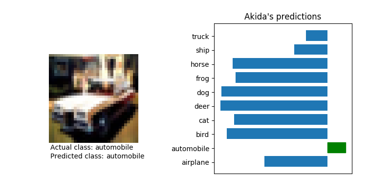

<!DOCTYPE html>
<!--[if IE 8]><html class="no-js lt-ie9" lang="en" > <![endif]-->
<!--[if gt IE 8]><!--> <html class="no-js" lang="en" > <!--<![endif]-->
<head>
  <meta charset="utf-8">
  
  <meta name="viewport" content="width=device-width, initial-scale=1.0">
  
  <title>Inference on CIFAR10 with VGG and MobileNet &mdash; Akida Examples  documentation</title>
  

  
  
    <link rel="shortcut icon" href="../../_static/favicon.ico"/>
  
  
  

  
  <script type="text/javascript" src="../../_static/js/modernizr.min.js"></script>
  
    
      <script type="text/javascript" id="documentation_options" data-url_root="../../" src="../../_static/documentation_options.js"></script>
        <script type="text/javascript" src="../../_static/jquery.js"></script>
        <script type="text/javascript" src="../../_static/underscore.js"></script>
        <script type="text/javascript" src="../../_static/doctools.js"></script>
        <script type="text/javascript" src="../../_static/language_data.js"></script>
    
    <script type="text/javascript" src="../../_static/js/theme.js"></script>

    

  
  <link rel="stylesheet" href="../../_static/css/theme.css" type="text/css" />
  <link rel="stylesheet" href="../../_static/pygments.css" type="text/css" />
  <link rel="stylesheet" href="../../_static/gallery.css" type="text/css" />
    <link rel="index" title="Index" href="../../genindex.html" />
    <link rel="search" title="Search" href="../../search.html" />
    <link rel="next" title="Transfer learning with MobileNet for cats vs. dogs" href="plot_cats_vs_dogs_cnn2akida_demo.html" />
    <link rel="prev" title="Inference on KWS with MobileNet" href="plot_mobilenet_kws.html" /> 
</head>

<body class="wy-body-for-nav">

   
  <div class="wy-grid-for-nav">
    
    <nav data-toggle="wy-nav-shift" class="wy-nav-side">
      <div class="wy-side-scroll">
        <div class="wy-side-nav-search"  style="background: #3f51b5" >
          

          
            <a href="../../index.html">
          

          
            
            
          
          </a>

          
            
            
              <div class="version">
                1.7.4
              </div>
            
          

          
<div role="search">
  <form id="rtd-search-form" class="wy-form" action="../../search.html" method="get">
    <input type="text" name="q" placeholder="Search docs" />
    <input type="hidden" name="check_keywords" value="yes" />
    <input type="hidden" name="area" value="default" />
  </form>
</div>

          
        </div>

        <div class="wy-menu wy-menu-vertical" data-spy="affix" role="navigation" aria-label="main navigation">
          
            
            
              
            
            
              <ul class="current">
<li class="toctree-l1"><a class="reference internal" href="../../index.html">Overview</a></li>
<li class="toctree-l1"><a class="reference internal" href="../../installation.html">Installation</a><ul>
<li class="toctree-l2"><a class="reference internal" href="../../installation.html#requirements">Requirements</a></li>
<li class="toctree-l2"><a class="reference internal" href="../../installation.html#quick-installation">Quick installation</a></li>
<li class="toctree-l2"><a class="reference internal" href="../../installation.html#running-examples">Running examples</a></li>
</ul>
</li>
<li class="toctree-l1"><a class="reference internal" href="../../user_guide/user_guide.html">User guide</a><ul>
<li class="toctree-l2"><a class="reference internal" href="../../user_guide/getting_started.html">Getting started</a><ul>
<li class="toctree-l3"><a class="reference internal" href="../../user_guide/getting_started.html#for-beginners">For beginners</a></li>
<li class="toctree-l3"><a class="reference internal" href="../../user_guide/getting_started.html#for-users-familiar-with-deep-learning">For users familiar with deep-learning</a></li>
</ul>
</li>
<li class="toctree-l2"><a class="reference internal" href="../../user_guide/aee.html">Akida user guide</a><ul>
<li class="toctree-l3"><a class="reference internal" href="../../user_guide/aee.html#the-akida-execution-engine">The Akida Execution Engine</a><ul>
<li class="toctree-l4"><a class="reference internal" href="../../user_guide/aee.html#id1">1. The Spiking Neural Network model</a></li>
<li class="toctree-l4"><a class="reference internal" href="../../user_guide/aee.html#id2">2. Input data format</a></li>
<li class="toctree-l4"><a class="reference internal" href="../../user_guide/aee.html#id3">3. Determine training mode</a></li>
<li class="toctree-l4"><a class="reference internal" href="../../user_guide/aee.html#id4">4. Interpreting outputs</a></li>
</ul>
</li>
<li class="toctree-l3"><a class="reference internal" href="../../user_guide/aee.html#neural-network-model">Neural Network model</a><ul>
<li class="toctree-l4"><a class="reference internal" href="../../user_guide/aee.html#specifying-the-neural-network-model">Specifying the Neural Network model</a></li>
<li class="toctree-l4"><a class="reference internal" href="../../user_guide/aee.html#saving-and-loading">Saving and loading</a></li>
<li class="toctree-l4"><a class="reference internal" href="../../user_guide/aee.html#input-layer-types">Input layer types</a></li>
<li class="toctree-l4"><a class="reference internal" href="../../user_guide/aee.html#data-processing-layer-types">Data-Processing layer types</a></li>
</ul>
</li>
<li class="toctree-l3"><a class="reference internal" href="../../user_guide/aee.html#id5">Using Akida Unsupervised Learning</a><ul>
<li class="toctree-l4"><a class="reference internal" href="../../user_guide/aee.html#learning-constraints">Learning constraints</a></li>
<li class="toctree-l4"><a class="reference internal" href="../../user_guide/aee.html#compiling-a-layer">Compiling a layer</a></li>
<li class="toctree-l4"><a class="reference internal" href="../../user_guide/aee.html#id7">Learning parameters</a></li>
</ul>
</li>
</ul>
</li>
<li class="toctree-l2"><a class="reference internal" href="../../user_guide/cnn2snn.html">CNN2SNN toolkit</a><ul>
<li class="toctree-l3"><a class="reference internal" href="../../user_guide/cnn2snn.html#overview">Overview</a><ul>
<li class="toctree-l4"><a class="reference internal" href="../../user_guide/cnn2snn.html#conversion-workflow">Conversion Workflow</a></li>
<li class="toctree-l4"><a class="reference internal" href="../../user_guide/cnn2snn.html#compatibility-constraints">Compatibility Constraints</a></li>
<li class="toctree-l4"><a class="reference internal" href="../../user_guide/cnn2snn.html#typical-training-scenario">Typical training scenario</a></li>
</ul>
</li>
<li class="toctree-l3"><a class="reference internal" href="../../user_guide/cnn2snn.html#layers-considerations">Layers Considerations</a><ul>
<li class="toctree-l4"><a class="reference internal" href="../../user_guide/cnn2snn.html#supported-layer-types">Supported layer types</a></li>
<li class="toctree-l4"><a class="reference internal" href="../../user_guide/cnn2snn.html#quantization-aware-layers">Quantization-aware layers</a></li>
<li class="toctree-l4"><a class="reference internal" href="../../user_guide/cnn2snn.html#training-only-layers">Training-Only Layers</a></li>
<li class="toctree-l4"><a class="reference internal" href="../../user_guide/cnn2snn.html#first-layers">First Layers</a></li>
<li class="toctree-l4"><a class="reference internal" href="../../user_guide/cnn2snn.html#id6">Final Layers</a></li>
</ul>
</li>
<li class="toctree-l3"><a class="reference internal" href="../../user_guide/cnn2snn.html#layer-blocks">Layer Blocks</a><ul>
<li class="toctree-l4"><a class="reference internal" href="../../user_guide/cnn2snn.html#id7">Overview</a></li>
<li class="toctree-l4"><a class="reference internal" href="../../user_guide/cnn2snn.html#conv-block"><code class="docutils literal notranslate"><span class="pre">conv_block</span></code></a></li>
<li class="toctree-l4"><a class="reference internal" href="../../user_guide/cnn2snn.html#dense-block"><code class="docutils literal notranslate"><span class="pre">dense_block</span></code></a></li>
<li class="toctree-l4"><a class="reference internal" href="../../user_guide/cnn2snn.html#separable-conv-block"><code class="docutils literal notranslate"><span class="pre">separable_conv_block</span></code></a></li>
</ul>
</li>
<li class="toctree-l3"><a class="reference internal" href="../../user_guide/cnn2snn.html#tips-and-tricks">Tips and Tricks</a></li>
</ul>
</li>
<li class="toctree-l2"><a class="reference internal" href="../../user_guide/hw_constraints.html">Hardware constraints</a><ul>
<li class="toctree-l3"><a class="reference internal" href="../../user_guide/hw_constraints.html#input-layer">Input layer</a></li>
<li class="toctree-l3"><a class="reference internal" href="../../user_guide/hw_constraints.html#data-processing-layers">Data-Processing layers</a><ul>
<li class="toctree-l4"><a class="reference internal" href="../../user_guide/hw_constraints.html#convolutional-layer">Convolutional layer</a></li>
<li class="toctree-l4"><a class="reference internal" href="../../user_guide/hw_constraints.html#fully-connected-layer">Fully connected layer</a></li>
</ul>
</li>
</ul>
</li>
</ul>
</li>
<li class="toctree-l1"><a class="reference internal" href="../../api_reference/api_reference.html">API reference</a><ul>
<li class="toctree-l2"><a class="reference internal" href="../../api_reference/aee_apis.html">Akida Execution Engine</a><ul>
<li class="toctree-l3"><a class="reference internal" href="../../api_reference/aee_apis.html#model">Model</a></li>
<li class="toctree-l3"><a class="reference internal" href="../../api_reference/aee_apis.html#layer">Layer</a></li>
<li class="toctree-l3"><a class="reference internal" href="../../api_reference/aee_apis.html#layerstatistics">LayerStatistics</a></li>
<li class="toctree-l3"><a class="reference internal" href="../../api_reference/aee_apis.html#observer">Observer</a></li>
<li class="toctree-l3"><a class="reference internal" href="../../api_reference/aee_apis.html#inputdata">InputData</a></li>
<li class="toctree-l3"><a class="reference internal" href="../../api_reference/aee_apis.html#inputconvolutional">InputConvolutional</a></li>
<li class="toctree-l3"><a class="reference internal" href="../../api_reference/aee_apis.html#inputbcspike">InputBCSpike</a></li>
<li class="toctree-l3"><a class="reference internal" href="../../api_reference/aee_apis.html#fullyconnected">FullyConnected</a></li>
<li class="toctree-l3"><a class="reference internal" href="../../api_reference/aee_apis.html#convolutional">Convolutional</a></li>
<li class="toctree-l3"><a class="reference internal" href="../../api_reference/aee_apis.html#separableconvolutional">SeparableConvolutional</a></li>
<li class="toctree-l3"><a class="reference internal" href="../../api_reference/aee_apis.html#tensor">Tensor</a></li>
<li class="toctree-l3"><a class="reference internal" href="../../api_reference/aee_apis.html#sparse">Sparse</a></li>
<li class="toctree-l3"><a class="reference internal" href="../../api_reference/aee_apis.html#coords-to-sparse">coords_to_sparse</a></li>
<li class="toctree-l3"><a class="reference internal" href="../../api_reference/aee_apis.html#dense-to-sparse">dense_to_sparse</a></li>
<li class="toctree-l3"><a class="reference internal" href="../../api_reference/aee_apis.html#backendtype">BackendType</a></li>
<li class="toctree-l3"><a class="reference internal" href="../../api_reference/aee_apis.html#convolutionmode">ConvolutionMode</a></li>
<li class="toctree-l3"><a class="reference internal" href="../../api_reference/aee_apis.html#poolingtype">PoolingType</a></li>
<li class="toctree-l3"><a class="reference internal" href="../../api_reference/aee_apis.html#learningtype">LearningType</a></li>
</ul>
</li>
<li class="toctree-l2"><a class="reference internal" href="../../api_reference/cnn2snn_apis.html">CNN2SNN</a><ul>
<li class="toctree-l3"><a class="reference internal" href="../../api_reference/cnn2snn_apis.html#convert">convert</a></li>
<li class="toctree-l3"><a class="reference internal" href="../../api_reference/cnn2snn_apis.html#check-model-compatibility">check_model_compatibility</a></li>
<li class="toctree-l3"><a class="reference internal" href="../../api_reference/cnn2snn_apis.html#weightquantizer">WeightQuantizer</a></li>
<li class="toctree-l3"><a class="reference internal" href="../../api_reference/cnn2snn_apis.html#weightfloat">WeightFloat</a></li>
<li class="toctree-l3"><a class="reference internal" href="../../api_reference/cnn2snn_apis.html#quantizedconv2d">QuantizedConv2D</a></li>
<li class="toctree-l3"><a class="reference internal" href="../../api_reference/cnn2snn_apis.html#quantizeddepthwiseconv2d">QuantizedDepthwiseConv2D</a></li>
<li class="toctree-l3"><a class="reference internal" href="../../api_reference/cnn2snn_apis.html#quantizeddense">QuantizedDense</a></li>
<li class="toctree-l3"><a class="reference internal" href="../../api_reference/cnn2snn_apis.html#quantizedseparableconv2d">QuantizedSeparableConv2D</a></li>
<li class="toctree-l3"><a class="reference internal" href="../../api_reference/cnn2snn_apis.html#activationdiscreterelu">ActivationDiscreteRelu</a></li>
</ul>
</li>
<li class="toctree-l2"><a class="reference internal" href="../../api_reference/akida_models_apis.html">Akida models</a><ul>
<li class="toctree-l3"><a class="reference internal" href="../../api_reference/akida_models_apis.html#quantization-blocks">Quantization blocks</a><ul>
<li class="toctree-l4"><a class="reference internal" href="../../api_reference/akida_models_apis.html#conv-block">conv_block</a></li>
<li class="toctree-l4"><a class="reference internal" href="../../api_reference/akida_models_apis.html#separable-conv-block">separable_conv_block</a></li>
<li class="toctree-l4"><a class="reference internal" href="../../api_reference/akida_models_apis.html#dense-block">dense_block</a></li>
</ul>
</li>
<li class="toctree-l3"><a class="reference internal" href="../../api_reference/akida_models_apis.html#model-zoo">Model zoo</a><ul>
<li class="toctree-l4"><a class="reference internal" href="../../api_reference/akida_models_apis.html#mobilenet">Mobilenet</a></li>
<li class="toctree-l4"><a class="reference internal" href="../../api_reference/akida_models_apis.html#vgg">VGG</a></li>
</ul>
</li>
</ul>
</li>
</ul>
</li>
<li class="toctree-l1 current"><a class="reference internal" href="../index.html">Examples</a><ul class="current">
<li class="toctree-l2 current"><a class="reference internal" href="../index.html#cnn2snn">CNN2SNN</a><ul class="current">
<li class="toctree-l3"><a class="reference internal" href="plot_mnist_cnn2akida_main.html">Inference on MNIST</a><ul>
<li class="toctree-l4"><a class="reference internal" href="plot_mnist_cnn2akida_main.html#loading-the-mnist-dataset">1. Loading the MNIST dataset</a></li>
<li class="toctree-l4"><a class="reference internal" href="plot_mnist_cnn2akida_main.html#look-at-some-images-from-the-test-dataset">2. Look at some images from the test dataset</a></li>
<li class="toctree-l4"><a class="reference internal" href="plot_mnist_cnn2akida_main.html#load-the-pre-trained-akida-model">3. Load the pre-trained Akida model</a></li>
<li class="toctree-l4"><a class="reference internal" href="plot_mnist_cnn2akida_main.html#classify-a-single-image">4. Classify a single image</a></li>
<li class="toctree-l4"><a class="reference internal" href="plot_mnist_cnn2akida_main.html#check-performance-across-a-number-of-samples">5. Check performance across a number of samples</a></li>
</ul>
</li>
<li class="toctree-l3"><a class="reference internal" href="plot_mobilenet_kws.html">Inference on KWS with MobileNet</a><ul>
<li class="toctree-l4"><a class="reference internal" href="plot_mobilenet_kws.html#load-cnn2snn-tool-dependencies">1. Load CNN2SNN tool dependencies</a></li>
<li class="toctree-l4"><a class="reference internal" href="plot_mobilenet_kws.html#load-the-preprocessed-dataset">2. Load the preprocessed dataset</a></li>
<li class="toctree-l4"><a class="reference internal" href="plot_mobilenet_kws.html#create-a-keras-model-satisfying-akida-nsoc-requirements">3. Create a Keras model satisfying Akida NSoC requirements</a></li>
<li class="toctree-l4"><a class="reference internal" href="plot_mobilenet_kws.html#check-performance">4. Check performance</a></li>
<li class="toctree-l4"><a class="reference internal" href="plot_mobilenet_kws.html#conversion-to-akida">5. Conversion to Akida</a></li>
</ul>
</li>
<li class="toctree-l3 current"><a class="current reference internal" href="#">Inference on CIFAR10 with VGG and MobileNet</a><ul>
<li class="toctree-l4"><a class="reference internal" href="#load-cnn2snn-tool-dependencies">1. Load CNN2SNN tool dependencies</a></li>
<li class="toctree-l4"><a class="reference internal" href="#load-and-reshape-cifar10-dataset">2. Load and reshape CIFAR10 dataset</a></li>
<li class="toctree-l4"><a class="reference internal" href="#create-a-quantized-keras-vgg-model">3. Create a quantized Keras VGG model</a></li>
<li class="toctree-l4"><a class="reference internal" href="#conversion-to-akida">4. Conversion to Akida</a></li>
<li class="toctree-l4"><a class="reference internal" href="#create-a-quantized-keras-mobilenet-model">5. Create a quantized Keras MobileNet model</a></li>
<li class="toctree-l4"><a class="reference internal" href="#id2">6. Conversion to Akida</a></li>
</ul>
</li>
<li class="toctree-l3"><a class="reference internal" href="plot_cats_vs_dogs_cnn2akida_demo.html">Transfer learning with MobileNet for cats vs. dogs</a><ul>
<li class="toctree-l4"><a class="reference internal" href="plot_cats_vs_dogs_cnn2akida_demo.html#transfer-learning-process">1. Transfer learning process</a></li>
<li class="toctree-l4"><a class="reference internal" href="plot_cats_vs_dogs_cnn2akida_demo.html#load-and-preprocess-data">2. Load and preprocess data</a></li>
<li class="toctree-l4"><a class="reference internal" href="plot_cats_vs_dogs_cnn2akida_demo.html#convert-a-quantized-keras-model-to-akida">3. Convert a quantized Keras model to Akida</a></li>
<li class="toctree-l4"><a class="reference internal" href="plot_cats_vs_dogs_cnn2akida_demo.html#classify-test-images">4. Classify test images</a></li>
</ul>
</li>
<li class="toctree-l3"><a class="reference internal" href="plot_mobilenet_imagenet.html">Inference on ImageNet with MobileNet</a><ul>
<li class="toctree-l4"><a class="reference internal" href="plot_mobilenet_imagenet.html#load-cnn2snn-tool-dependencies">1. Load CNN2SNN tool dependencies</a></li>
<li class="toctree-l4"><a class="reference internal" href="plot_mobilenet_imagenet.html#load-test-images-from-imagenet">2. Load test images from ImageNet</a></li>
<li class="toctree-l4"><a class="reference internal" href="plot_mobilenet_imagenet.html#create-a-quantized-keras-model">3. Create a quantized Keras model</a></li>
<li class="toctree-l4"><a class="reference internal" href="plot_mobilenet_imagenet.html#convert-keras-model-for-akida-nsoc">4. Convert Keras model for Akida NSoC</a></li>
</ul>
</li>
<li class="toctree-l3"><a class="reference internal" href="plot_mnist_cnn2akida_demo.html">CNN conversion flow tutorial for MNIST</a><ul>
<li class="toctree-l4"><a class="reference internal" href="plot_mnist_cnn2akida_demo.html#system-configuration">1. System configuration</a></li>
<li class="toctree-l4"><a class="reference internal" href="plot_mnist_cnn2akida_demo.html#model-creation-and-performance-check">2. Model creation and performance check</a></li>
<li class="toctree-l4"><a class="reference internal" href="plot_mnist_cnn2akida_demo.html#model-akida-compatibility-check-and-changes">3. Model Akida-compatibility check and changes</a></li>
<li class="toctree-l4"><a class="reference internal" href="plot_mnist_cnn2akida_demo.html#model-quantization-and-training">4. Model quantization and training</a></li>
<li class="toctree-l4"><a class="reference internal" href="plot_mnist_cnn2akida_demo.html#convert-trained-model-for-akida-and-test">5. Convert trained model for Akida and test</a></li>
</ul>
</li>
</ul>
</li>
<li class="toctree-l2"><a class="reference internal" href="../index.html#semisupervised">Semisupervised</a><ul>
<li class="toctree-l3"><a class="reference internal" href="../semisupervised/plot_mnist_main.html">Learning and inference on MNIST</a><ul>
<li class="toctree-l4"><a class="reference internal" href="../semisupervised/plot_mnist_main.html#loading-the-mnist-dataset">1. Loading the MNIST dataset</a></li>
<li class="toctree-l4"><a class="reference internal" href="../semisupervised/plot_mnist_main.html#look-at-some-images-from-the-dataset">2. Look at some images from the dataset</a></li>
<li class="toctree-l4"><a class="reference internal" href="../semisupervised/plot_mnist_main.html#configuring-akida-model">3. Configuring Akida model</a></li>
<li class="toctree-l4"><a class="reference internal" href="../semisupervised/plot_mnist_main.html#testing-performance">4. Testing performance</a></li>
<li class="toctree-l4"><a class="reference internal" href="../semisupervised/plot_mnist_main.html#learning-and-inference">5. Learning and inference</a></li>
</ul>
</li>
<li class="toctree-l3"><a class="reference internal" href="../semisupervised/plot_dvs_main.html">Learning and inference on Characters DVS</a><ul>
<li class="toctree-l4"><a class="reference internal" href="../semisupervised/plot_dvs_main.html#loading-the-characters-dvs-dataset">1. Loading the Characters DVS dataset</a></li>
<li class="toctree-l4"><a class="reference internal" href="../semisupervised/plot_dvs_main.html#look-at-some-events-from-the-dataset">2. Look at some events from the dataset</a></li>
<li class="toctree-l4"><a class="reference internal" href="../semisupervised/plot_dvs_main.html#configuring-akida-model">3. Configuring Akida model</a></li>
<li class="toctree-l4"><a class="reference internal" href="../semisupervised/plot_dvs_main.html#learning-and-inference">4. Learning and inference</a></li>
<li class="toctree-l4"><a class="reference internal" href="../semisupervised/plot_dvs_main.html#unsupervised-learning-with-supervised-classification">5. Unsupervised learning with supervised classification</a></li>
</ul>
</li>
<li class="toctree-l3"><a class="reference internal" href="../semisupervised/plot_nslkdd_main.html">Learning and inference on NSL-KDD</a><ul>
<li class="toctree-l4"><a class="reference internal" href="../semisupervised/plot_nslkdd_main.html#download-and-prepare-the-nsl-kdd-dataset">1. Download and prepare the NSL-KDD dataset</a></li>
<li class="toctree-l4"><a class="reference internal" href="../semisupervised/plot_nslkdd_main.html#sneak-peek-of-the-input-tabular-data">2. Sneak peek of the input tabular data</a></li>
<li class="toctree-l4"><a class="reference internal" href="../semisupervised/plot_nslkdd_main.html#convert-from-tabular-to-binary-data">3. Convert from tabular to binary data</a></li>
<li class="toctree-l4"><a class="reference internal" href="../semisupervised/plot_nslkdd_main.html#oversampling-the-training-data-to-cope-with-imbalanced-dataset">4. Oversampling the training data to cope with imbalanced dataset</a></li>
<li class="toctree-l4"><a class="reference internal" href="../semisupervised/plot_nslkdd_main.html#configuring-akida-model">5. Configuring Akida model</a></li>
<li class="toctree-l4"><a class="reference internal" href="../semisupervised/plot_nslkdd_main.html#learning-and-inference">6. Learning and inference</a></li>
<li class="toctree-l4"><a class="reference internal" href="../semisupervised/plot_nslkdd_main.html#display-results">7. Display results</a></li>
</ul>
</li>
</ul>
</li>
<li class="toctree-l2"><a class="reference internal" href="../index.html#unsupervised">Unsupervised</a><ul>
<li class="toctree-l3"><a class="reference internal" href="../unsupervised/plot_unsupervised_main.html">Native learning for pattern detection</a><ul>
<li class="toctree-l4"><a class="reference internal" href="../unsupervised/plot_unsupervised_main.html#creating-the-dataset">1. Creating the dataset</a></li>
<li class="toctree-l4"><a class="reference internal" href="../unsupervised/plot_unsupervised_main.html#creating-random-dot-images">2. Creating random dot images</a></li>
<li class="toctree-l4"><a class="reference internal" href="../unsupervised/plot_unsupervised_main.html#take-a-look-at-some-of-the-random-dots-images">3. Take a look at some of the random dots images</a></li>
<li class="toctree-l4"><a class="reference internal" href="../unsupervised/plot_unsupervised_main.html#configuring-the-akida-model">4. Configuring the Akida model</a></li>
<li class="toctree-l4"><a class="reference internal" href="../unsupervised/plot_unsupervised_main.html#do-the-learning">5. Do the learning</a></li>
<li class="toctree-l4"><a class="reference internal" href="../unsupervised/plot_unsupervised_main.html#test-the-performance">6. Test the performance</a></li>
</ul>
</li>
</ul>
</li>
</ul>
</li>
<li class="toctree-l1"><a class="reference external" href="https://support.brainchip.com/portal/home">Support</a></li>
<li class="toctree-l1"><a class="reference internal" href="../../license.html">License</a></li>
</ul>

            
          
        </div>
      </div>
    </nav>

    <section data-toggle="wy-nav-shift" class="wy-nav-content-wrap">

      
      <nav class="wy-nav-top" aria-label="top navigation">
        
          <i data-toggle="wy-nav-top" class="fa fa-bars"></i>
          <a href="../../index.html">Akida Examples</a>
        
      </nav>


      <div class="wy-nav-content">
        
        <div class="rst-content">
        
          


<div role="navigation" aria-label="breadcrumbs navigation">

  <ul class="wy-breadcrumbs">
    
      <li><a href="../../index.html">Docs</a> &raquo;</li>
        
          <li><a href="../index.html">Akida examples</a> &raquo;</li>
        
      <li>Inference on CIFAR10 with VGG and MobileNet</li>
    
    
      <li class="wy-breadcrumbs-aside">
        
            
        
      </li>
    
  </ul>

  
  <hr/>
</div>
          <div role="main" class="document" itemscope="itemscope" itemtype="http://schema.org/Article">
           <div itemprop="articleBody">
            
  <div class="sphx-glr-download-link-note admonition note">
<p class="admonition-title">Note</p>
<p>Click <a class="reference internal" href="#sphx-glr-download-examples-cnn2snn-plot-cifar10-cnn2akida-demo-py"><span class="std std-ref">here</span></a> to download the full example code</p>
</div>
<div class="sphx-glr-example-title section" id="inference-on-cifar10-with-vgg-and-mobilenet">
<span id="sphx-glr-examples-cnn2snn-plot-cifar10-cnn2akida-demo-py"></span><h1>Inference on CIFAR10 with VGG and MobileNet<a class="headerlink" href="#inference-on-cifar10-with-vgg-and-mobilenet" title="Permalink to this headline">¶</a></h1>
<p>The CIFAR-10 dataset consists of 60000 32x32 color images in 10 classes,
with 6000 images per class. There are 50000 training images and 10000
test images.</p>
<p>This tutorial uses this dataset for a classic object classification task
(airplane, automobile, bird, cat, deer, dog, frog, horse, ship, truck).</p>
<p>We start from state-of-the-art CNN models, illustrating how these models
can be quantized, then converted to an Akida model with an equivalent
accuracy.</p>
<p>The neural networks used in this tutorial are inspired from the
<a class="reference external" href="https://arxiv.org/abs/1409.1556">VGG</a> and
<a class="reference external" href="https://arxiv.org/abs/1704.04861">MobileNets</a> architecture
respectively.</p>
<p>The VGG architecture uses Convolutional and Dense layers: these layers
must therefore be quantized with at most 2 bits of precision to be
compatible with the Akida NSoC. This causes a 2 % drop in accuracy.</p>
<p>The MobileNet architecture uses Separable Convolutional layers that can
be quantized using 4 bits of precision, allowing to preserve the base
Keras model accuracy.</p>
<table class="docutils align-default">
<colgroup>
<col style="width: 68%" />
<col style="width: 33%" />
</colgroup>
<thead>
<tr class="row-odd"><th class="head"><p>Model</p></th>
<th class="head"><p>Accuracy</p></th>
</tr>
</thead>
<tbody>
<tr class="row-even"><td><p>VGG Keras</p></td>
<td><p>93.15 %</p></td>
</tr>
<tr class="row-odd"><td><p>VGG Keras quantized</p></td>
<td><p>91.30 %</p></td>
</tr>
<tr class="row-even"><td><p>VGG Akida</p></td>
<td><p><strong>91.59 %</strong></p></td>
</tr>
<tr class="row-odd"><td><p>MobileNet Keras</p></td>
<td><p>93.49 %</p></td>
</tr>
<tr class="row-even"><td><p>MobileNet Keras quantized</p></td>
<td><p>93.07 %</p></td>
</tr>
<tr class="row-odd"><td><p>MobileNet Akida</p></td>
<td><p><strong>93.22 %</strong></p></td>
</tr>
</tbody>
</table>
<div class="section" id="load-cnn2snn-tool-dependencies">
<h2>1. Load CNN2SNN tool dependencies<a class="headerlink" href="#load-cnn2snn-tool-dependencies" title="Permalink to this headline">¶</a></h2>
<div class="highlight-default notranslate"><div class="highlight"><pre><span></span><span class="c1"># System imports</span>
<span class="kn">import</span> <span class="nn">os</span>
<span class="kn">import</span> <span class="nn">sys</span>
<span class="kn">import</span> <span class="nn">numpy</span> <span class="k">as</span> <span class="nn">np</span>
<span class="kn">from</span> <span class="nn">sklearn.metrics</span> <span class="kn">import</span> <span class="n">accuracy_score</span>
<span class="kn">from</span> <span class="nn">timeit</span> <span class="kn">import</span> <span class="n">default_timer</span> <span class="k">as</span> <span class="n">timer</span>

<span class="c1"># TensorFlow imports</span>
<span class="kn">from</span> <span class="nn">tensorflow.keras.datasets</span> <span class="kn">import</span> <span class="n">cifar10</span>

<span class="c1"># Akida models imports</span>
<span class="kn">from</span> <span class="nn">akida_models</span> <span class="kn">import</span> <span class="n">mobilenet_cifar10</span><span class="p">,</span> <span class="n">vgg_cifar10</span>

<span class="c1"># CNN2SNN</span>
<span class="kn">from</span> <span class="nn">cnn2snn</span> <span class="kn">import</span> <span class="n">convert</span>
</pre></div>
</div>
</div>
<div class="section" id="load-and-reshape-cifar10-dataset">
<h2>2. Load and reshape CIFAR10 dataset<a class="headerlink" href="#load-and-reshape-cifar10-dataset" title="Permalink to this headline">¶</a></h2>
<div class="highlight-default notranslate"><div class="highlight"><pre><span></span><span class="c1"># Load CIFAR10 dataset</span>
<span class="p">(</span><span class="n">x_train</span><span class="p">,</span> <span class="n">y_train</span><span class="p">),</span> <span class="p">(</span><span class="n">x_test</span><span class="p">,</span> <span class="n">y_test</span><span class="p">)</span> <span class="o">=</span> <span class="n">cifar10</span><span class="o">.</span><span class="n">load_data</span><span class="p">()</span>

<span class="c1"># Reshape x-data</span>
<span class="n">x_train</span> <span class="o">=</span> <span class="n">x_train</span><span class="o">.</span><span class="n">reshape</span><span class="p">(</span><span class="mi">50000</span><span class="p">,</span> <span class="mi">32</span><span class="p">,</span> <span class="mi">32</span><span class="p">,</span> <span class="mi">3</span><span class="p">)</span>
<span class="n">x_test</span> <span class="o">=</span> <span class="n">x_test</span><span class="o">.</span><span class="n">reshape</span><span class="p">(</span><span class="mi">10000</span><span class="p">,</span> <span class="mi">32</span><span class="p">,</span> <span class="mi">32</span><span class="p">,</span> <span class="mi">3</span><span class="p">)</span>
<span class="n">input_shape</span> <span class="o">=</span> <span class="p">(</span><span class="mi">32</span><span class="p">,</span> <span class="mi">32</span><span class="p">,</span> <span class="mi">3</span><span class="p">)</span>

<span class="c1"># Set aside raw test data for use with Akida Execution Engine later</span>
<span class="n">raw_x_test</span> <span class="o">=</span> <span class="n">x_test</span><span class="o">.</span><span class="n">astype</span><span class="p">(</span><span class="s1">&#39;uint8&#39;</span><span class="p">)</span>

<span class="c1"># Rescale x-data</span>
<span class="n">a</span> <span class="o">=</span> <span class="mi">255</span>
<span class="n">b</span> <span class="o">=</span> <span class="mi">0</span>
<span class="n">input_scaling</span> <span class="o">=</span> <span class="p">(</span><span class="n">a</span><span class="p">,</span> <span class="n">b</span><span class="p">)</span>
<span class="n">x_train</span> <span class="o">=</span> <span class="n">x_train</span><span class="o">.</span><span class="n">astype</span><span class="p">(</span><span class="s1">&#39;float32&#39;</span><span class="p">)</span>
<span class="n">x_test</span> <span class="o">=</span> <span class="n">x_test</span><span class="o">.</span><span class="n">astype</span><span class="p">(</span><span class="s1">&#39;float32&#39;</span><span class="p">)</span>
<span class="n">x_train</span> <span class="o">=</span> <span class="p">(</span><span class="n">x_train</span> <span class="o">-</span> <span class="n">b</span><span class="p">)</span><span class="o">/</span><span class="n">a</span>
<span class="n">x_test</span> <span class="o">=</span> <span class="p">(</span><span class="n">x_test</span> <span class="o">-</span> <span class="n">b</span><span class="p">)</span><span class="o">/</span><span class="n">a</span>
</pre></div>
</div>
<p class="sphx-glr-script-out">Out:</p>
<div class="sphx-glr-script-out highlight-none notranslate"><div class="highlight"><pre><span></span>Downloading data from https://www.cs.toronto.edu/~kriz/cifar-10-python.tar.gz

     8192/170498071 [..............................] - ETA: 35:05
    40960/170498071 [..............................] - ETA: 13:56
    90112/170498071 [..............................] - ETA: 9:28 
   204800/170498071 [..............................] - ETA: 5:32
   417792/170498071 [..............................] - ETA: 3:23
   860160/170498071 [..............................] - ETA: 1:58
  1728512/170498071 [..............................] - ETA: 1:08
  2826240/170498071 [..............................] - ETA: 54s 
  5808128/170498071 [&gt;.............................] - ETA: 29s
  6873088/170498071 [&gt;.............................] - ETA: 27s
  7643136/170498071 [&gt;.............................] - ETA: 26s
 10018816/170498071 [&gt;.............................] - ETA: 21s
 11411456/170498071 [=&gt;............................] - ETA: 19s
 12820480/170498071 [=&gt;............................] - ETA: 18s
 14229504/170498071 [=&gt;............................] - ETA: 17s
 15671296/170498071 [=&gt;............................] - ETA: 17s
 17113088/170498071 [==&gt;...........................] - ETA: 16s
 18554880/170498071 [==&gt;...........................] - ETA: 15s
 20013056/170498071 [==&gt;...........................] - ETA: 15s
 21487616/170498071 [==&gt;...........................] - ETA: 14s
 22962176/170498071 [===&gt;..........................] - ETA: 14s
 24453120/170498071 [===&gt;..........................] - ETA: 13s
 25944064/170498071 [===&gt;..........................] - ETA: 13s
 27451392/170498071 [===&gt;..........................] - ETA: 13s
 28958720/170498071 [====&gt;.........................] - ETA: 12s
 30482432/170498071 [====&gt;.........................] - ETA: 12s
 32006144/170498071 [====&gt;.........................] - ETA: 12s
 33546240/170498071 [====&gt;.........................] - ETA: 11s
 35086336/170498071 [=====&gt;........................] - ETA: 11s
 36626432/170498071 [=====&gt;........................] - ETA: 11s
 38166528/170498071 [=====&gt;........................] - ETA: 11s
 39198720/170498071 [=====&gt;........................] - ETA: 10s
 39739392/170498071 [=====&gt;........................] - ETA: 10s
 41279488/170498071 [======&gt;.......................] - ETA: 10s
 42205184/170498071 [======&gt;.......................] - ETA: 10s
 42868736/170498071 [======&gt;.......................] - ETA: 10s
 44441600/170498071 [======&gt;.......................] - ETA: 10s
 46014464/170498071 [=======&gt;......................] - ETA: 9s 
 46850048/170498071 [=======&gt;......................] - ETA: 9s
 47620096/170498071 [=======&gt;......................] - ETA: 9s
 49192960/170498071 [=======&gt;......................] - ETA: 9s
 49995776/170498071 [=======&gt;......................] - ETA: 9s
 50798592/170498071 [=======&gt;......................] - ETA: 9s
 52387840/170498071 [========&gt;.....................] - ETA: 9s
 53207040/170498071 [========&gt;.....................] - ETA: 9s
 54009856/170498071 [========&gt;.....................] - ETA: 9s
 55599104/170498071 [========&gt;.....................] - ETA: 8s
 56418304/170498071 [========&gt;.....................] - ETA: 8s
 57229312/170498071 [=========&gt;....................] - ETA: 8s
 58048512/170498071 [=========&gt;....................] - ETA: 8s
 58859520/170498071 [=========&gt;....................] - ETA: 8s
 60448768/170498071 [=========&gt;....................] - ETA: 8s
 61284352/170498071 [=========&gt;....................] - ETA: 8s
 62103552/170498071 [=========&gt;....................] - ETA: 8s
 63692800/170498071 [==========&gt;...................] - ETA: 8s
 64528384/170498071 [==========&gt;...................] - ETA: 7s
 65347584/170498071 [==========&gt;...................] - ETA: 7s
 66199552/170498071 [==========&gt;...................] - ETA: 7s
 67002368/170498071 [==========&gt;...................] - ETA: 7s
 68591616/170498071 [===========&gt;..................] - ETA: 7s
 69394432/170498071 [===========&gt;..................] - ETA: 7s
 70230016/170498071 [===========&gt;..................] - ETA: 7s
 71163904/170498071 [===========&gt;..................] - ETA: 7s
 71901184/170498071 [===========&gt;..................] - ETA: 7s
 72867840/170498071 [===========&gt;..................] - ETA: 7s
 73572352/170498071 [===========&gt;..................] - ETA: 7s
 75177984/170498071 [============&gt;.................] - ETA: 6s
 76062720/170498071 [============&gt;.................] - ETA: 6s
 76849152/170498071 [============&gt;.................] - ETA: 6s
 77750272/170498071 [============&gt;.................] - ETA: 6s
 78520320/170498071 [============&gt;.................] - ETA: 6s
 79470592/170498071 [============&gt;.................] - ETA: 6s
 80191488/170498071 [=============&gt;................] - ETA: 6s
 81780736/170498071 [=============&gt;................] - ETA: 6s
 82665472/170498071 [=============&gt;................] - ETA: 6s
 83468288/170498071 [=============&gt;................] - ETA: 6s
 84369408/170498071 [=============&gt;................] - ETA: 6s
 85164032/170498071 [=============&gt;................] - ETA: 6s
 85991424/170498071 [==============&gt;...............] - ETA: 6s
 86827008/170498071 [==============&gt;...............] - ETA: 5s
 87678976/170498071 [==============&gt;...............] - ETA: 5s
 88530944/170498071 [==============&gt;...............] - ETA: 5s
 90136576/170498071 [==============&gt;...............] - ETA: 5s
 90906624/170498071 [==============&gt;...............] - ETA: 5s
 91807744/170498071 [===============&gt;..............] - ETA: 5s
 92684288/170498071 [===============&gt;..............] - ETA: 5s
 93495296/170498071 [===============&gt;..............] - ETA: 5s
 94363648/170498071 [===============&gt;..............] - ETA: 5s
 95166464/170498071 [===============&gt;..............] - ETA: 5s
 96092160/170498071 [===============&gt;..............] - ETA: 5s
 96854016/170498071 [================&gt;.............] - ETA: 5s
 97787904/170498071 [================&gt;.............] - ETA: 5s
 98557952/170498071 [================&gt;.............] - ETA: 5s
100147200/170498071 [================&gt;.............] - ETA: 4s
100851712/170498071 [================&gt;.............] - ETA: 4s
101834752/170498071 [================&gt;.............] - ETA: 4s
102588416/170498071 [=================&gt;............] - ETA: 4s
103522304/170498071 [=================&gt;............] - ETA: 4s
104079360/170498071 [=================&gt;............] - ETA: 4s
105226240/170498071 [=================&gt;............] - ETA: 4s
105816064/170498071 [=================&gt;............] - ETA: 4s
106962944/170498071 [=================&gt;............] - ETA: 4s
107962368/170498071 [=================&gt;............] - ETA: 4s
108650496/170498071 [==================&gt;...........] - ETA: 4s
109600768/170498071 [==================&gt;...........] - ETA: 4s
110092288/170498071 [==================&gt;...........] - ETA: 4s
112041984/170498071 [==================&gt;...........] - ETA: 4s
112779264/170498071 [==================&gt;...........] - ETA: 3s
113238016/170498071 [==================&gt;...........] - ETA: 3s
113958912/170498071 [===================&gt;..........] - ETA: 3s
114450432/170498071 [===================&gt;..........] - ETA: 3s
115204096/170498071 [===================&gt;..........] - ETA: 3s
115679232/170498071 [===================&gt;..........] - ETA: 3s
116416512/170498071 [===================&gt;..........] - ETA: 3s
116875264/170498071 [===================&gt;..........] - ETA: 3s
117612544/170498071 [===================&gt;..........] - ETA: 3s
118104064/170498071 [===================&gt;..........] - ETA: 3s
118890496/170498071 [===================&gt;..........] - ETA: 3s
119316480/170498071 [===================&gt;..........] - ETA: 3s
120086528/170498071 [====================&gt;.........] - ETA: 3s
120545280/170498071 [====================&gt;.........] - ETA: 3s
121348096/170498071 [====================&gt;.........] - ETA: 3s
121790464/170498071 [====================&gt;.........] - ETA: 3s
122601472/170498071 [====================&gt;.........] - ETA: 3s
123052032/170498071 [====================&gt;.........] - ETA: 3s
123871232/170498071 [====================&gt;.........] - ETA: 3s
124313600/170498071 [====================&gt;.........] - ETA: 3s
125165568/170498071 [=====================&gt;........] - ETA: 3s
125591552/170498071 [=====================&gt;........] - ETA: 3s
126459904/170498071 [=====================&gt;........] - ETA: 3s
126869504/170498071 [=====================&gt;........] - ETA: 3s
127737856/170498071 [=====================&gt;........] - ETA: 3s
128180224/170498071 [=====================&gt;........] - ETA: 2s
128917504/170498071 [=====================&gt;........] - ETA: 2s
129490944/170498071 [=====================&gt;........] - ETA: 2s
130211840/170498071 [=====================&gt;........] - ETA: 2s
130785280/170498071 [======================&gt;.......] - ETA: 2s
131506176/170498071 [======================&gt;.......] - ETA: 2s
132079616/170498071 [======================&gt;.......] - ETA: 2s
132816896/170498071 [======================&gt;.......] - ETA: 2s
133406720/170498071 [======================&gt;.......] - ETA: 2s
134111232/170498071 [======================&gt;.......] - ETA: 2s
134750208/170498071 [======================&gt;.......] - ETA: 2s
135421952/170498071 [======================&gt;.......] - ETA: 2s
136044544/170498071 [======================&gt;.......] - ETA: 2s
136765440/170498071 [=======================&gt;......] - ETA: 2s
137355264/170498071 [=======================&gt;......] - ETA: 2s
138125312/170498071 [=======================&gt;......] - ETA: 2s
138715136/170498071 [=======================&gt;......] - ETA: 2s
139501568/170498071 [=======================&gt;......] - ETA: 2s
140066816/170498071 [=======================&gt;......] - ETA: 2s
140828672/170498071 [=======================&gt;......] - ETA: 2s
141418496/170498071 [=======================&gt;......] - ETA: 2s
142172160/170498071 [========================&gt;.....] - ETA: 2s
142794752/170498071 [========================&gt;.....] - ETA: 1s
143499264/170498071 [========================&gt;.....] - ETA: 1s
144171008/170498071 [========================&gt;.....] - ETA: 1s
144842752/170498071 [========================&gt;.....] - ETA: 1s
145514496/170498071 [========================&gt;.....] - ETA: 1s
146202624/170498071 [========================&gt;.....] - ETA: 1s
146890752/170498071 [========================&gt;.....] - ETA: 1s
147595264/170498071 [========================&gt;.....] - ETA: 1s
148283392/170498071 [=========================&gt;....] - ETA: 1s
148971520/170498071 [=========================&gt;....] - ETA: 1s
149676032/170498071 [=========================&gt;....] - ETA: 1s
150380544/170498071 [=========================&gt;....] - ETA: 1s
151085056/170498071 [=========================&gt;....] - ETA: 1s
151756800/170498071 [=========================&gt;....] - ETA: 1s
152461312/170498071 [=========================&gt;....] - ETA: 1s
153149440/170498071 [=========================&gt;....] - ETA: 1s
153837568/170498071 [==========================&gt;...] - ETA: 1s
154525696/170498071 [==========================&gt;...] - ETA: 1s
155246592/170498071 [==========================&gt;...] - ETA: 1s
155983872/170498071 [==========================&gt;...] - ETA: 1s
156688384/170498071 [==========================&gt;...] - ETA: 0s
157392896/170498071 [==========================&gt;...] - ETA: 0s
158097408/170498071 [==========================&gt;...] - ETA: 0s
158801920/170498071 [==========================&gt;...] - ETA: 0s
159490048/170498071 [===========================&gt;..] - ETA: 0s
160186368/170498071 [===========================&gt;..] - ETA: 0s
160907264/170498071 [===========================&gt;..] - ETA: 0s
161587200/170498071 [===========================&gt;..] - ETA: 0s
162357248/170498071 [===========================&gt;..] - ETA: 0s
162996224/170498071 [===========================&gt;..] - ETA: 0s
163766272/170498071 [===========================&gt;..] - ETA: 0s
164405248/170498071 [===========================&gt;..] - ETA: 0s
165191680/170498071 [============================&gt;.] - ETA: 0s
165814272/170498071 [============================&gt;.] - ETA: 0s
166633472/170498071 [============================&gt;.] - ETA: 0s
167256064/170498071 [============================&gt;.] - ETA: 0s
168091648/170498071 [============================&gt;.] - ETA: 0s
168665088/170498071 [============================&gt;.] - ETA: 0s
169517056/170498071 [============================&gt;.] - ETA: 0s
170172416/170498071 [============================&gt;.] - ETA: 0s
170500096/170498071 [==============================] - 12s 0us/step
</pre></div>
</div>
</div>
<div class="section" id="create-a-quantized-keras-vgg-model">
<h2>3. Create a quantized Keras VGG model<a class="headerlink" href="#create-a-quantized-keras-vgg-model" title="Permalink to this headline">¶</a></h2>
<p>A Keras model based on the <a class="reference external" href="https://arxiv.org/abs/1409.1556">VGG</a>
architecture is instantiated with quantized weights and activations.</p>
<p>This model relies only on FullyConnected and Convolutional layers:</p>
<blockquote>
<div><ul class="simple">
<li><p>all the layers have 2-bit weights,</p></li>
<li><p>all the layers have 2-bit activations.</p></li>
</ul>
</div></blockquote>
<p>This model therefore satisfies the Akida NSoC requirements.</p>
<p>This section goes as follows:</p>
<blockquote>
<div><ul class="simple">
<li><p><strong>3.A - Instantiate a quantized Keras VGG model</strong> according to above
specifications and load pre-trained weights** that performs 91 % accuracy
on the test dataset.</p></li>
<li><p><strong>3.B - Check performance</strong> on the test set.</p></li>
</ul>
</div></blockquote>
<div class="section" id="a-instantiate-keras-model">
<h3>3.A Instantiate Keras model<a class="headerlink" href="#a-instantiate-keras-model" title="Permalink to this headline">¶</a></h3>
<p>The <code class="docutils literal notranslate"><span class="pre">vgg_cifar10</span></code> function returns a VGG Keras model with custom
quantized layers (see <code class="docutils literal notranslate"><span class="pre">quantization_layers.py</span></code> in the CNN2SNN module).</p>
<div class="admonition note">
<p class="admonition-title">Note</p>
<p>The pre-trained weights which are loaded in the section 3.B
corresponds to the quantization parameters in the next cell. If you
want to modify some of these parameters, you must re-train the model
and save the weights.</p>
</div>
<p>Pre-trained weights were obtained after a series of training episodes,
starting from unconstrained float weights and activations and ending
with quantized 2-bits weights and activations.</p>
<p>For the first training episode, we train the model with unconstrained
float weights and activations for 1000 epochs.</p>
<p>For the subsequent training episodes, we start from the weights trained
in the previous episode, progressively reducing the bitwidth of
activations, then weights. We also stop the episode when the training
loss has stopped decreasing for 20 epochs.</p>
<p>The table below summarizes the results obtained when preparing the
weights stored under <a class="reference external" href="http://data.brainchip.com/models/vgg/">http://data.brainchip.com/models/vgg/</a>:</p>
<table class="docutils align-default">
<colgroup>
<col style="width: 16%" />
<col style="width: 28%" />
<col style="width: 26%" />
<col style="width: 17%" />
<col style="width: 14%" />
</colgroup>
<thead>
<tr class="row-odd"><th class="head"><p>Episode</p></th>
<th class="head"><p>Weights Quant.</p></th>
<th class="head"><p>Activ. Quant.</p></th>
<th class="head"><p>Accuracy</p></th>
<th class="head"><p>Epochs</p></th>
</tr>
</thead>
<tbody>
<tr class="row-even"><td><p>1</p></td>
<td><p>N/A</p></td>
<td><p>N/A</p></td>
<td><p>93.15 %</p></td>
<td><p>1000</p></td>
</tr>
<tr class="row-odd"><td><p>2</p></td>
<td><p>4 bits</p></td>
<td><p>4 bits</p></td>
<td><p>93.24 %</p></td>
<td><p>30</p></td>
</tr>
<tr class="row-even"><td><p>3</p></td>
<td><p>3 bits</p></td>
<td><p>4 bits</p></td>
<td><p>92.91 %</p></td>
<td><p>50</p></td>
</tr>
<tr class="row-odd"><td><p>4</p></td>
<td><p>3 bits</p></td>
<td><p>3 bits</p></td>
<td><p>92.38 %</p></td>
<td><p>64</p></td>
</tr>
<tr class="row-even"><td><p>5</p></td>
<td><p>2 bits</p></td>
<td><p>3 bits</p></td>
<td><p>91.48 %</p></td>
<td><p>82</p></td>
</tr>
<tr class="row-odd"><td><p>6</p></td>
<td><p>2 bits</p></td>
<td><p>2 bits</p></td>
<td><p>91.31 %</p></td>
<td><p>74</p></td>
</tr>
</tbody>
</table>
<p>Please refer to <a class="reference external" href="plot_mnist_cnn2akida_demo.html">CNN conversion tutorial</a>
and/or the <a class="reference external" href="../../api_reference/cnn2snn_apis.html">CNN2SNN toolkit</a>
documentation for flow and training steps details.</p>
<div class="highlight-default notranslate"><div class="highlight"><pre><span></span><span class="c1"># Instantiate the quantized model</span>
<span class="n">model_keras</span> <span class="o">=</span> <span class="n">vgg_cifar10</span><span class="p">(</span><span class="n">input_shape</span><span class="p">,</span>
                          <span class="n">weights</span><span class="o">=</span><span class="s1">&#39;cifar10&#39;</span><span class="p">,</span>
                          <span class="n">weights_quantization</span><span class="o">=</span><span class="mi">2</span><span class="p">,</span>
                          <span class="n">activ_quantization</span><span class="o">=</span><span class="mi">2</span><span class="p">,</span>
                          <span class="n">input_weights_quantization</span><span class="o">=</span><span class="mi">2</span><span class="p">)</span>
<span class="n">model_keras</span><span class="o">.</span><span class="n">summary</span><span class="p">()</span>
</pre></div>
</div>
<p class="sphx-glr-script-out">Out:</p>
<div class="sphx-glr-script-out highlight-none notranslate"><div class="highlight"><pre><span></span>Downloading data from http://data.brainchip.com/models/vgg/vgg_cifar10_wq2_aq2.hdf5

    8192/56218264 [..............................] - ETA: 1:51
   81920/56218264 [..............................] - ETA: 45s 
  606208/56218264 [..............................] - ETA: 10s
 2277376/56218264 [&gt;.............................] - ETA: 4s 
 5496832/56218264 [=&gt;............................] - ETA: 2s
 7577600/56218264 [===&gt;..........................] - ETA: 1s
 9256960/56218264 [===&gt;..........................] - ETA: 1s
11075584/56218264 [====&gt;.........................] - ETA: 1s
13008896/56218264 [=====&gt;........................] - ETA: 1s
15032320/56218264 [=======&gt;......................] - ETA: 1s
17170432/56218264 [========&gt;.....................] - ETA: 1s
19365888/56218264 [=========&gt;....................] - ETA: 1s
21659648/56218264 [==========&gt;...................] - ETA: 1s
24051712/56218264 [===========&gt;..................] - ETA: 0s
26411008/56218264 [=============&gt;................] - ETA: 0s
28721152/56218264 [==============&gt;...............] - ETA: 0s
31055872/56218264 [===============&gt;..............] - ETA: 0s
33439744/56218264 [================&gt;.............] - ETA: 0s
35864576/56218264 [==================&gt;...........] - ETA: 0s
38379520/56218264 [===================&gt;..........] - ETA: 0s
41000960/56218264 [====================&gt;.........] - ETA: 0s
43606016/56218264 [======================&gt;.......] - ETA: 0s
46252032/56218264 [=======================&gt;......] - ETA: 0s
49004544/56218264 [=========================&gt;....] - ETA: 0s
51650560/56218264 [==========================&gt;...] - ETA: 0s
54263808/56218264 [===========================&gt;..] - ETA: 0s
56221696/56218264 [==============================] - 1s 0us/step
Model: &quot;vgg_cifar10&quot;
_________________________________________________________________
Layer (type)                 Output Shape              Param #
=================================================================
input_2 (InputLayer)         [(None, 32, 32, 3)]       0
_________________________________________________________________
conv_0 (QuantizedConv2D)     (None, 32, 32, 128)       3456
_________________________________________________________________
conv_0_BN (BatchNormalizatio (None, 32, 32, 128)       512
_________________________________________________________________
conv_0_relu (ActivationDiscr (None, 32, 32, 128)       0
_________________________________________________________________
conv_1 (QuantizedConv2D)     (None, 32, 32, 128)       147456
_________________________________________________________________
conv_1_maxpool (MaxPooling2D (None, 16, 16, 128)       0
_________________________________________________________________
conv_1_BN (BatchNormalizatio (None, 16, 16, 128)       512
_________________________________________________________________
conv_1_relu (ActivationDiscr (None, 16, 16, 128)       0
_________________________________________________________________
conv_2 (QuantizedConv2D)     (None, 16, 16, 256)       294912
_________________________________________________________________
conv_2_BN (BatchNormalizatio (None, 16, 16, 256)       1024
_________________________________________________________________
conv_2_relu (ActivationDiscr (None, 16, 16, 256)       0
_________________________________________________________________
conv_3 (QuantizedConv2D)     (None, 16, 16, 256)       589824
_________________________________________________________________
conv_3_maxpool (MaxPooling2D (None, 8, 8, 256)         0
_________________________________________________________________
conv_3_BN (BatchNormalizatio (None, 8, 8, 256)         1024
_________________________________________________________________
conv_3_relu (ActivationDiscr (None, 8, 8, 256)         0
_________________________________________________________________
conv_4 (QuantizedConv2D)     (None, 8, 8, 512)         1179648
_________________________________________________________________
conv_4_BN (BatchNormalizatio (None, 8, 8, 512)         2048
_________________________________________________________________
conv_4_relu (ActivationDiscr (None, 8, 8, 512)         0
_________________________________________________________________
conv_5 (QuantizedConv2D)     (None, 8, 8, 512)         2359296
_________________________________________________________________
conv_5_maxpool (MaxPooling2D (None, 4, 4, 512)         0
_________________________________________________________________
conv_5_BN (BatchNormalizatio (None, 4, 4, 512)         2048
_________________________________________________________________
conv_5_relu (ActivationDiscr (None, 4, 4, 512)         0
_________________________________________________________________
flatten (Flatten)            (None, 8192)              0
_________________________________________________________________
dense_6 (QuantizedDense)     (None, 1024)              8388608
_________________________________________________________________
dense_6_BN (BatchNormalizati (None, 1024)              4096
_________________________________________________________________
dense_6_relu (ActivationDisc (None, 1024)              0
_________________________________________________________________
dense_7 (QuantizedDense)     (None, 1024)              1048576
_________________________________________________________________
dense_7_BN (BatchNormalizati (None, 1024)              4096
_________________________________________________________________
dense_7_relu (ActivationDisc (None, 1024)              0
_________________________________________________________________
dense_8 (QuantizedDense)     (None, 10)                10240
=================================================================
Total params: 14,037,376
Trainable params: 14,029,696
Non-trainable params: 7,680
_________________________________________________________________
</pre></div>
</div>
</div>
<div class="section" id="b-check-performance">
<h3>3.B Check performance<a class="headerlink" href="#b-check-performance" title="Permalink to this headline">¶</a></h3>
<p>We check the Keras model accuracy on the first <em>n</em> images of the test
set.</p>
<p>The table below summarizes the expected results:</p>
<table class="docutils align-default">
<colgroup>
<col style="width: 47%" />
<col style="width: 53%" />
</colgroup>
<thead>
<tr class="row-odd"><th class="head"><p>#Images</p></th>
<th class="head"><p>Accuracy</p></th>
</tr>
</thead>
<tbody>
<tr class="row-even"><td><p>100</p></td>
<td><p>94.00 %</p></td>
</tr>
<tr class="row-odd"><td><p>1000</p></td>
<td><p>90.80 %</p></td>
</tr>
<tr class="row-even"><td><p>10000</p></td>
<td><p>91.30 %</p></td>
</tr>
</tbody>
</table>
<div class="admonition note">
<p class="admonition-title">Note</p>
<p>Depending on your hardware setup, the processing time may vary
greatly.</p>
</div>
<div class="highlight-default notranslate"><div class="highlight"><pre><span></span><span class="n">num_images</span> <span class="o">=</span> <span class="mi">1000</span>

<span class="c1"># Check Model performance</span>
<span class="n">start</span> <span class="o">=</span> <span class="n">timer</span><span class="p">()</span>
<span class="n">potentials_keras</span> <span class="o">=</span> <span class="n">model_keras</span><span class="o">.</span><span class="n">predict</span><span class="p">(</span><span class="n">x_test</span><span class="p">[:</span><span class="n">num_images</span><span class="p">])</span>
<span class="n">preds_keras</span> <span class="o">=</span> <span class="n">np</span><span class="o">.</span><span class="n">squeeze</span><span class="p">(</span><span class="n">np</span><span class="o">.</span><span class="n">argmax</span><span class="p">(</span><span class="n">potentials_keras</span><span class="p">,</span> <span class="mi">1</span><span class="p">))</span>

<span class="n">accuracy</span> <span class="o">=</span> <span class="n">accuracy_score</span><span class="p">(</span><span class="n">y_test</span><span class="p">[:</span><span class="n">num_images</span><span class="p">],</span> <span class="n">preds_keras</span><span class="p">)</span>
<span class="nb">print</span><span class="p">(</span><span class="s2">&quot;Accuracy: &quot;</span><span class="o">+</span><span class="s2">&quot;</span><span class="si">{0:.2f}</span><span class="s2">&quot;</span><span class="o">.</span><span class="n">format</span><span class="p">(</span><span class="mi">100</span><span class="o">*</span><span class="n">accuracy</span><span class="p">)</span><span class="o">+</span><span class="s2">&quot;%&quot;</span><span class="p">)</span>
<span class="n">end</span> <span class="o">=</span> <span class="n">timer</span><span class="p">()</span>
<span class="nb">print</span><span class="p">(</span><span class="sa">f</span><span class="s1">&#39;Keras inference on </span><span class="si">{num_images}</span><span class="s1"> images took {end-start:.2f} s.</span><span class="se">\n</span><span class="s1">&#39;</span><span class="p">)</span>
</pre></div>
</div>
<p class="sphx-glr-script-out">Out:</p>
<div class="sphx-glr-script-out highlight-none notranslate"><div class="highlight"><pre><span></span>Accuracy: 91.20%
Keras inference on 1000 images took 2.41 s.
</pre></div>
</div>
</div>
</div>
<div class="section" id="conversion-to-akida">
<h2>4. Conversion to Akida<a class="headerlink" href="#conversion-to-akida" title="Permalink to this headline">¶</a></h2>
<div class="section" id="a-convert-to-akida-model">
<h3>4.A Convert to Akida model<a class="headerlink" href="#a-convert-to-akida-model" title="Permalink to this headline">¶</a></h3>
<p>When converting to an Akida model, we just need to pass the Keras model
and the input scaling that was used during training.</p>
<div class="highlight-default notranslate"><div class="highlight"><pre><span></span><span class="c1"># Convert the model</span>
<span class="n">model_akida</span> <span class="o">=</span> <span class="n">convert</span><span class="p">(</span><span class="n">model_keras</span><span class="p">,</span> <span class="n">input_scaling</span><span class="o">=</span><span class="n">input_scaling</span><span class="p">)</span>
</pre></div>
</div>
</div>
<div class="section" id="b-check-hardware-compliancy">
<h3>4.B Check hardware compliancy<a class="headerlink" href="#b-check-hardware-compliancy" title="Permalink to this headline">¶</a></h3>
<p>The <a class="reference external" href="../../api_reference/aee_apis.html#akida.Model.summary">Model.summary()</a>
method provides a detailed description of the Model layers.</p>
<p>It also indicates it they are hardware-compatible (see the <code class="docutils literal notranslate"><span class="pre">HW</span></code> third
column).</p>
<div class="highlight-default notranslate"><div class="highlight"><pre><span></span><span class="n">model_akida</span><span class="o">.</span><span class="n">summary</span><span class="p">()</span>
</pre></div>
</div>
<p class="sphx-glr-script-out">Out:</p>
<div class="sphx-glr-script-out highlight-none notranslate"><div class="highlight"><pre><span></span>-------------------------------------------------------------------------------------------------------------------------
Layer (type)           HW  Input shape   Output shape  Kernel shape  Learning (#classes)       #InConn/#Weights/ThFire
=========================================================================================================================
conv_0 (InputConvoluti yes [32, 32, 3]   [32, 32, 128] (3 x 3 x 3)   N/A                       27 / 16 / 0
-------------------------------------------------------------------------------------------------------------------------
conv_1 (Convolutional) yes [32, 32, 128] [16, 16, 128] (3 x 3 x 128) N/A                       1152 / 626 / 0
-------------------------------------------------------------------------------------------------------------------------
conv_2 (Convolutional) yes [16, 16, 128] [16, 16, 256] (3 x 3 x 128) N/A                       1152 / 669 / 0
-------------------------------------------------------------------------------------------------------------------------
conv_3 (Convolutional) yes [16, 16, 256] [8, 8, 256]   (3 x 3 x 256) N/A                       2304 / 1371 / 0
-------------------------------------------------------------------------------------------------------------------------
conv_4 (Convolutional) yes [8, 8, 256]   [8, 8, 512]   (3 x 3 x 256) N/A                       2304 / 1391 / 0
-------------------------------------------------------------------------------------------------------------------------
conv_5 (Convolutional) yes [8, 8, 512]   [4, 4, 512]   (3 x 3 x 512) N/A                       4608 / 2826 / 0
-------------------------------------------------------------------------------------------------------------------------
dense_6 (FullyConnecte yes [4, 4, 512]   [1, 1, 1024]  N/A           N/A                       8192 / 4977 / 0
-------------------------------------------------------------------------------------------------------------------------
dense_7 (FullyConnecte yes [1, 1, 1024]  [1, 1, 1024]  N/A           N/A                       1024 / 604 / 0
-------------------------------------------------------------------------------------------------------------------------
dense_8 (FullyConnecte yes [1, 1, 1024]  [1, 1, 10]    N/A           N/A                       1024 / 500 / 0
-------------------------------------------------------------------------------------------------------------------------
</pre></div>
</div>
</div>
<div class="section" id="c-check-performance">
<h3>4.C Check performance<a class="headerlink" href="#c-check-performance" title="Permalink to this headline">¶</a></h3>
<p>We check the Akida model accuracy on the first <em>n</em> images of the test
set.</p>
<p>The table below summarizes the expected results:</p>
<table class="docutils align-default">
<colgroup>
<col style="width: 47%" />
<col style="width: 53%" />
</colgroup>
<thead>
<tr class="row-odd"><th class="head"><p>#Images</p></th>
<th class="head"><p>Accuracy</p></th>
</tr>
</thead>
<tbody>
<tr class="row-even"><td><p>100</p></td>
<td><p>95.00 %</p></td>
</tr>
<tr class="row-odd"><td><p>1000</p></td>
<td><p>91.90 %</p></td>
</tr>
<tr class="row-even"><td><p>10000</p></td>
<td><p>91.59 %</p></td>
</tr>
</tbody>
</table>
<p>Due to the conversion process, the predictions may be slightly different
between the original Keras model and Akida on some specific images.</p>
<p>This explains why when testing on a limited number of images the
accuracy numbers between Keras and Akida may be quite different. On the
full test set however, the two models accuracies are almost identical.</p>
<blockquote>
<div><div class="admonition note">
<p class="admonition-title">Note</p>
<p>Depending on your hardware setup, the processing time may vary
greatly.</p>
</div>
</div></blockquote>
<div class="highlight-default notranslate"><div class="highlight"><pre><span></span><span class="n">num_images</span> <span class="o">=</span> <span class="mi">1000</span>

<span class="c1"># Check Model performance</span>
<span class="n">start</span> <span class="o">=</span> <span class="n">timer</span><span class="p">()</span>
<span class="n">results</span> <span class="o">=</span> <span class="n">model_akida</span><span class="o">.</span><span class="n">predict</span><span class="p">(</span><span class="n">raw_x_test</span><span class="p">[:</span><span class="n">num_images</span><span class="p">])</span>
<span class="n">accuracy</span> <span class="o">=</span> <span class="n">accuracy_score</span><span class="p">(</span><span class="n">y_test</span><span class="p">[:</span><span class="n">num_images</span><span class="p">],</span> <span class="n">results</span><span class="p">)</span>

<span class="nb">print</span><span class="p">(</span><span class="s2">&quot;Accuracy: &quot;</span><span class="o">+</span><span class="s2">&quot;</span><span class="si">{0:.2f}</span><span class="s2">&quot;</span><span class="o">.</span><span class="n">format</span><span class="p">(</span><span class="mi">100</span><span class="o">*</span><span class="n">accuracy</span><span class="p">)</span><span class="o">+</span><span class="s2">&quot;%&quot;</span><span class="p">)</span>
<span class="n">end</span> <span class="o">=</span> <span class="n">timer</span><span class="p">()</span>
<span class="nb">print</span><span class="p">(</span><span class="sa">f</span><span class="s1">&#39;Akida inference on </span><span class="si">{num_images}</span><span class="s1"> images took {end-start:.2f} s.</span><span class="se">\n</span><span class="s1">&#39;</span><span class="p">)</span>

<span class="c1"># For non-regression purpose</span>
<span class="k">if</span> <span class="n">num_images</span> <span class="o">==</span> <span class="mi">1000</span><span class="p">:</span>
    <span class="k">assert</span> <span class="n">accuracy</span> <span class="o">==</span> <span class="mf">0.919</span>
</pre></div>
</div>
<p class="sphx-glr-script-out">Out:</p>
<div class="sphx-glr-script-out highlight-none notranslate"><div class="highlight"><pre><span></span>Accuracy: 91.90%
Akida inference on 1000 images took 3.47 s.
</pre></div>
</div>
<div class="highlight-default notranslate"><div class="highlight"><pre><span></span><span class="c1"># Print model statistics</span>
<span class="nb">print</span><span class="p">(</span><span class="s2">&quot;Model statistics&quot;</span><span class="p">)</span>
<span class="n">stats</span> <span class="o">=</span> <span class="n">model_akida</span><span class="o">.</span><span class="n">get_statistics</span><span class="p">()</span>
<span class="n">model_akida</span><span class="o">.</span><span class="n">predict</span><span class="p">(</span><span class="n">raw_x_test</span><span class="p">[:</span><span class="mi">20</span><span class="p">])</span>
<span class="k">for</span> <span class="n">_</span><span class="p">,</span> <span class="n">stat</span> <span class="ow">in</span> <span class="n">stats</span><span class="o">.</span><span class="n">items</span><span class="p">():</span>
    <span class="nb">print</span><span class="p">(</span><span class="n">stat</span><span class="p">)</span>
</pre></div>
</div>
<p class="sphx-glr-script-out">Out:</p>
<div class="sphx-glr-script-out highlight-none notranslate"><div class="highlight"><pre><span></span>Model statistics
Layer (type)                  output sparsity
conv_0 (InputConvolutional)   0.75
Layer (type)                  input sparsity      output sparsity     ops
conv_1 (Convolutional)        0.75                0.75                37861690
Layer (type)                  input sparsity      output sparsity     ops
conv_2 (Convolutional)        0.75                0.79                19215590
Layer (type)                  input sparsity      output sparsity     ops
conv_3 (Convolutional)        0.79                0.83                31943232
Layer (type)                  input sparsity      output sparsity     ops
conv_4 (Convolutional)        0.83                0.89                12716237
Layer (type)                  input sparsity      output sparsity     ops
conv_5 (Convolutional)        0.89                0.89                17111347
Layer (type)                  input sparsity      output sparsity     ops
dense_6 (FullyConnected)      0.89                0.87                960154
Layer (type)                  input sparsity      output sparsity     ops
dense_7 (FullyConnected)      0.87                0.87                139622
Layer (type)                  input sparsity      output sparsity     ops
dense_8 (FullyConnected)      0.87                0.00                1345
</pre></div>
</div>
</div>
</div>
<div class="section" id="create-a-quantized-keras-mobilenet-model">
<h2>5. Create a quantized Keras MobileNet model<a class="headerlink" href="#create-a-quantized-keras-mobilenet-model" title="Permalink to this headline">¶</a></h2>
<p>A Keras model based on the
<a class="reference external" href="https://arxiv.org/abs/1704.04861">MobileNets</a> architecture is
instantiated with quantized weights and activations.</p>
<p>This model relies on a first Convolutional layer followed by several
Separable Convolutional layers:</p>
<blockquote>
<div><ul class="simple">
<li><p>all the layers have 4-bit weights,</p></li>
<li><p>all the layers have 4-bit activations.</p></li>
</ul>
</div></blockquote>
<p>This model therefore satisfies the Akida NSoC requirements.</p>
<p>This section goes as follows:</p>
<blockquote>
<div><ul class="simple">
<li><p><strong>5.A - Instantiate a quantized Keras model</strong> according to above
specifications</p></li>
<li><p><strong>5.B - Check performance</strong> on the test set.</p></li>
</ul>
</div></blockquote>
<div class="section" id="a-instantiate-keras-mobilenet-model">
<h3>5.A Instantiate Keras MobileNet model<a class="headerlink" href="#a-instantiate-keras-mobilenet-model" title="Permalink to this headline">¶</a></h3>
<p>The <code class="docutils literal notranslate"><span class="pre">mobilenet_cifar10</span></code> function returns a MobileNet Keras model with
custom quantized layers (see <code class="docutils literal notranslate"><span class="pre">quantization_layers.py</span></code> in the CNN2SNN
module).</p>
<blockquote>
<div><div class="admonition note">
<p class="admonition-title">Note</p>
<p>The pre-trained weights which are loaded in the section 3.B
corresponds to the quantization parameters in the next cell. If you
want to modify some of these parameters, you must re-train the
model and save the weights.</p>
</div>
</div></blockquote>
<p>Pre-trained weights were obtained after two training episodes:</p>
<blockquote>
<div><ul class="simple">
<li><p>first, we train the model with unconstrained float weights and
activations for 1000 epochs,</p></li>
<li><p>then, we tune the model with quantized weights initialized from those
trained in the previous episode.</p></li>
</ul>
</div></blockquote>
<p>We stop the second training episode when the training loss has stopped
decreasing for 20 epochs.</p>
<p>The table below summarizes the results obtained when preparing the
weights stored under <code class="docutils literal notranslate"><span class="pre">http://data.brainchip.com/models/mobilenet/</span></code>:</p>
<table class="docutils align-default">
<colgroup>
<col style="width: 16%" />
<col style="width: 28%" />
<col style="width: 26%" />
<col style="width: 17%" />
<col style="width: 14%" />
</colgroup>
<thead>
<tr class="row-odd"><th class="head"><p>Episode</p></th>
<th class="head"><p>Weights Quant.</p></th>
<th class="head"><p>Activ. Quant.</p></th>
<th class="head"><p>Accuracy</p></th>
<th class="head"><p>Epochs</p></th>
</tr>
</thead>
<tbody>
<tr class="row-even"><td><p>1</p></td>
<td><p>N/A</p></td>
<td><p>N/A</p></td>
<td><p>93.49 %</p></td>
<td><p>1000</p></td>
</tr>
<tr class="row-odd"><td><p>2</p></td>
<td><p>4 bits</p></td>
<td><p>4 bits</p></td>
<td><p>93.07 %</p></td>
<td><p>44</p></td>
</tr>
</tbody>
</table>
<p>Please refer to <a class="reference external" href="plot_mnist_cnn2akida_demo.html">CNN conversion tutorial</a>
and/or the <a class="reference external" href="../../api_reference/cnn2snn_apis.html">CNN2SNN toolkit</a>
documentation for flow and training steps details.</p>
<div class="highlight-default notranslate"><div class="highlight"><pre><span></span><span class="c1"># Use a quantized model with pretrained quantized weights (93.07% accuracy)</span>
<span class="n">model_keras</span> <span class="o">=</span> <span class="n">mobilenet_cifar10</span><span class="p">(</span><span class="n">input_shape</span><span class="p">,</span>
                                <span class="n">weights</span><span class="o">=</span><span class="s1">&#39;cifar10&#39;</span><span class="p">,</span>
                                <span class="n">weights_quantization</span><span class="o">=</span><span class="mi">4</span><span class="p">,</span>
                                <span class="n">activ_quantization</span><span class="o">=</span><span class="mi">4</span><span class="p">,</span>
                                <span class="n">input_weights_quantization</span><span class="o">=</span><span class="mi">8</span><span class="p">)</span>
<span class="n">model_keras</span><span class="o">.</span><span class="n">summary</span><span class="p">()</span>
</pre></div>
</div>
<p class="sphx-glr-script-out">Out:</p>
<div class="sphx-glr-script-out highlight-none notranslate"><div class="highlight"><pre><span></span>Downloading data from http://data.brainchip.com/models/mobilenet/mobilenet_cifar10_wq4_aq4.hdf5

    8192/10815304 [..............................] - ETA: 21s
   81920/10815304 [..............................] - ETA: 8s 
  614400/10815304 [&gt;.............................] - ETA: 1s
 1982464/10815304 [====&gt;.........................] - ETA: 2s
 4644864/10815304 [===========&gt;..................] - ETA: 0s
 4841472/10815304 [============&gt;.................] - ETA: 0s
 5824512/10815304 [===============&gt;..............] - ETA: 0s
 7274496/10815304 [===================&gt;..........] - ETA: 0s
 8830976/10815304 [=======================&gt;......] - ETA: 0s
10485760/10815304 [============================&gt;.] - ETA: 0s
10821632/10815304 [==============================] - 1s 0us/step
Model: &quot;mobilenet_cifar10&quot;
_________________________________________________________________
Layer (type)                 Output Shape              Param #
=================================================================
input_3 (InputLayer)         [(None, 32, 32, 3)]       0
_________________________________________________________________
conv_0 (QuantizedConv2D)     (None, 32, 32, 128)       3456
_________________________________________________________________
conv_0_BN (BatchNormalizatio (None, 32, 32, 128)       512
_________________________________________________________________
conv_0_relu (ActivationDiscr (None, 32, 32, 128)       0
_________________________________________________________________
separable_1 (QuantizedSepara (None, 32, 32, 128)       17536
_________________________________________________________________
separable_1_BN (BatchNormali (None, 32, 32, 128)       512
_________________________________________________________________
separable_1_relu (Activation (None, 32, 32, 128)       0
_________________________________________________________________
separable_2 (QuantizedSepara (None, 32, 32, 256)       33920
_________________________________________________________________
separable_2_BN (BatchNormali (None, 32, 32, 256)       1024
_________________________________________________________________
separable_2_relu (Activation (None, 32, 32, 256)       0
_________________________________________________________________
separable_3 (QuantizedSepara (None, 32, 32, 256)       67840
_________________________________________________________________
separable_3_maxpool (MaxPool (None, 16, 16, 256)       0
_________________________________________________________________
separable_3_BN (BatchNormali (None, 16, 16, 256)       1024
_________________________________________________________________
separable_3_relu (Activation (None, 16, 16, 256)       0
_________________________________________________________________
separable_4 (QuantizedSepara (None, 16, 16, 512)       133376
_________________________________________________________________
separable_4_BN (BatchNormali (None, 16, 16, 512)       2048
_________________________________________________________________
separable_4_relu (Activation (None, 16, 16, 512)       0
_________________________________________________________________
separable_5 (QuantizedSepara (None, 16, 16, 512)       266752
_________________________________________________________________
separable_5_maxpool (MaxPool (None, 8, 8, 512)         0
_________________________________________________________________
separable_5_BN (BatchNormali (None, 8, 8, 512)         2048
_________________________________________________________________
separable_5_relu (Activation (None, 8, 8, 512)         0
_________________________________________________________________
separable_6 (QuantizedSepara (None, 8, 8, 512)         266752
_________________________________________________________________
separable_6_BN (BatchNormali (None, 8, 8, 512)         2048
_________________________________________________________________
separable_6_relu (Activation (None, 8, 8, 512)         0
_________________________________________________________________
separable_7 (QuantizedSepara (None, 8, 8, 512)         266752
_________________________________________________________________
separable_7_maxpool (MaxPool (None, 4, 4, 512)         0
_________________________________________________________________
separable_7_BN (BatchNormali (None, 4, 4, 512)         2048
_________________________________________________________________
separable_7_relu (Activation (None, 4, 4, 512)         0
_________________________________________________________________
separable_8 (QuantizedSepara (None, 4, 4, 1024)        528896
_________________________________________________________________
separable_8_BN (BatchNormali (None, 4, 4, 1024)        4096
_________________________________________________________________
separable_8_relu (Activation (None, 4, 4, 1024)        0
_________________________________________________________________
separable_9 (QuantizedSepara (None, 4, 4, 1024)        1057792
_________________________________________________________________
separable_9_BN (BatchNormali (None, 4, 4, 1024)        4096
_________________________________________________________________
separable_9_relu (Activation (None, 4, 4, 1024)        0
_________________________________________________________________
separable_10 (QuantizedSepar (None, 4, 4, 10)          19456
_________________________________________________________________
separable_10_global_avg (Glo (None, 10)                0
=================================================================
Total params: 2,681,984
Trainable params: 2,672,256
Non-trainable params: 9,728
_________________________________________________________________
</pre></div>
</div>
</div>
<div class="section" id="id1">
<h3>5.B Check performance<a class="headerlink" href="#id1" title="Permalink to this headline">¶</a></h3>
<p>We check the Keras model accuracy on the first <em>n</em> images of the test
set.</p>
<p>The table below summarizes the expected results:</p>
<table class="docutils align-default">
<colgroup>
<col style="width: 47%" />
<col style="width: 53%" />
</colgroup>
<thead>
<tr class="row-odd"><th class="head"><p>#Images</p></th>
<th class="head"><p>Accuracy</p></th>
</tr>
</thead>
<tbody>
<tr class="row-even"><td><p>100</p></td>
<td><p>95.00 %</p></td>
</tr>
<tr class="row-odd"><td><p>1000</p></td>
<td><p>93.10 %</p></td>
</tr>
<tr class="row-even"><td><p>10000</p></td>
<td><p>93.07 %</p></td>
</tr>
</tbody>
</table>
<div class="admonition note">
<p class="admonition-title">Note</p>
<p>Depending on your hardware setup, the processing time may vary
greatly.</p>
</div>
<div class="highlight-default notranslate"><div class="highlight"><pre><span></span><span class="n">num_images</span> <span class="o">=</span> <span class="mi">1000</span>

<span class="c1"># Check Model performance</span>
<span class="n">start</span> <span class="o">=</span> <span class="n">timer</span><span class="p">()</span>
<span class="n">potentials_keras</span> <span class="o">=</span> <span class="n">model_keras</span><span class="o">.</span><span class="n">predict</span><span class="p">(</span><span class="n">x_test</span><span class="p">[:</span><span class="n">num_images</span><span class="p">])</span>
<span class="n">preds_keras</span> <span class="o">=</span> <span class="n">np</span><span class="o">.</span><span class="n">squeeze</span><span class="p">(</span><span class="n">np</span><span class="o">.</span><span class="n">argmax</span><span class="p">(</span><span class="n">potentials_keras</span><span class="p">,</span> <span class="mi">1</span><span class="p">))</span>

<span class="n">accuracy</span> <span class="o">=</span> <span class="n">accuracy_score</span><span class="p">(</span><span class="n">y_test</span><span class="p">[:</span><span class="n">num_images</span><span class="p">],</span> <span class="n">preds_keras</span><span class="p">)</span>
<span class="nb">print</span><span class="p">(</span><span class="s2">&quot;Accuracy: &quot;</span><span class="o">+</span><span class="s2">&quot;</span><span class="si">{0:.2f}</span><span class="s2">&quot;</span><span class="o">.</span><span class="n">format</span><span class="p">(</span><span class="mi">100</span><span class="o">*</span><span class="n">accuracy</span><span class="p">)</span><span class="o">+</span><span class="s2">&quot;%&quot;</span><span class="p">)</span>
<span class="n">end</span> <span class="o">=</span> <span class="n">timer</span><span class="p">()</span>
<span class="nb">print</span><span class="p">(</span><span class="sa">f</span><span class="s1">&#39;Keras inference on </span><span class="si">{num_images}</span><span class="s1"> images took {end-start:.2f} s.</span><span class="se">\n</span><span class="s1">&#39;</span><span class="p">)</span>
</pre></div>
</div>
<p class="sphx-glr-script-out">Out:</p>
<div class="sphx-glr-script-out highlight-none notranslate"><div class="highlight"><pre><span></span>Accuracy: 93.00%
Keras inference on 1000 images took 2.92 s.
</pre></div>
</div>
</div>
</div>
<div class="section" id="id2">
<h2>6. Conversion to Akida<a class="headerlink" href="#id2" title="Permalink to this headline">¶</a></h2>
<div class="section" id="id3">
<h3>6.A Convert to Akida model<a class="headerlink" href="#id3" title="Permalink to this headline">¶</a></h3>
<p>When converting to an Akida model, we just need to pass the Keras model
and the input scaling that was used during training.</p>
<div class="highlight-default notranslate"><div class="highlight"><pre><span></span><span class="n">model_akida</span> <span class="o">=</span> <span class="n">convert</span><span class="p">(</span><span class="n">model_keras</span><span class="p">,</span> <span class="n">input_scaling</span><span class="o">=</span><span class="n">input_scaling</span><span class="p">)</span>
</pre></div>
</div>
</div>
<div class="section" id="id4">
<h3>6.B Check hardware compliancy<a class="headerlink" href="#id4" title="Permalink to this headline">¶</a></h3>
<p>The <a class="reference external" href="../../api_reference/aee_apis.html#akida.Model.summary">Model.summary()</a>
method provides a detailed description of the Model layers.</p>
<p>It also indicates it they are hardware-compatible (see the <code class="docutils literal notranslate"><span class="pre">HW</span></code> third
column).</p>
<div class="highlight-default notranslate"><div class="highlight"><pre><span></span><span class="n">model_akida</span><span class="o">.</span><span class="n">summary</span><span class="p">()</span>
</pre></div>
</div>
<p class="sphx-glr-script-out">Out:</p>
<div class="sphx-glr-script-out highlight-none notranslate"><div class="highlight"><pre><span></span>-------------------------------------------------------------------------------------------------------------------------
Layer (type)           HW  Input shape   Output shape  Kernel shape  Learning (#classes)       #InConn/#Weights/ThFire
=========================================================================================================================
conv_0 (InputConvoluti yes [32, 32, 3]   [32, 32, 128] (3 x 3 x 3)   N/A                       27 / 26 / 0
-------------------------------------------------------------------------------------------------------------------------
separable_1 (Separable yes [32, 32, 128] [32, 32, 128] (3 x 3 x 128) N/A                       1152 / 55 / 0
-------------------------------------------------------------------------------------------------------------------------
separable_2 (Separable yes [32, 32, 128] [32, 32, 256] (3 x 3 x 128) N/A                       1152 / 73 / 0
-------------------------------------------------------------------------------------------------------------------------
separable_3 (Separable yes [32, 32, 256] [16, 16, 256] (3 x 3 x 256) N/A                       2304 / 108 / 0
-------------------------------------------------------------------------------------------------------------------------
separable_4 (Separable yes [16, 16, 256] [16, 16, 512] (3 x 3 x 256) N/A                       2304 / 143 / 0
-------------------------------------------------------------------------------------------------------------------------
separable_5 (Separable yes [16, 16, 512] [8, 8, 512]   (3 x 3 x 512) N/A                       4608 / 215 / 0
-------------------------------------------------------------------------------------------------------------------------
separable_6 (Separable yes [8, 8, 512]   [8, 8, 512]   (3 x 3 x 512) N/A                       4608 / 216 / 0
-------------------------------------------------------------------------------------------------------------------------
separable_7 (Separable yes [8, 8, 512]   [4, 4, 512]   (3 x 3 x 512) N/A                       4608 / 216 / 0
-------------------------------------------------------------------------------------------------------------------------
separable_8 (Separable yes [4, 4, 512]   [4, 4, 1024]  (3 x 3 x 512) N/A                       4608 / 285 / 0
-------------------------------------------------------------------------------------------------------------------------
separable_9 (Separable yes [4, 4, 1024]  [4, 4, 1024]  (3 x 3 x 1024 N/A                       9216 / 419 / 0
-------------------------------------------------------------------------------------------------------------------------
separable_10 (Separabl yes [4, 4, 1024]  [1, 1, 10]    (3 x 3 x 1024 N/A                       9216 / 14 / 0
-------------------------------------------------------------------------------------------------------------------------
</pre></div>
</div>
</div>
<div class="section" id="id5">
<h3>6.C Check performance<a class="headerlink" href="#id5" title="Permalink to this headline">¶</a></h3>
<p>We check the Akida model accuracy on the first <em>n</em> images of the test
set.</p>
<p>The table below summarizes the expected results:</p>
<table class="docutils align-default">
<colgroup>
<col style="width: 47%" />
<col style="width: 53%" />
</colgroup>
<thead>
<tr class="row-odd"><th class="head"><p>#Images</p></th>
<th class="head"><p>Accuracy</p></th>
</tr>
</thead>
<tbody>
<tr class="row-even"><td><p>100</p></td>
<td><p>95.00 %</p></td>
</tr>
<tr class="row-odd"><td><p>1000</p></td>
<td><p>93.10 %</p></td>
</tr>
<tr class="row-even"><td><p>10000</p></td>
<td><p>93.22 %</p></td>
</tr>
</tbody>
</table>
<p>Due to the conversion process, the predictions may be slightly different
between the original Keras model and Akida on some specific images.</p>
<p>This explains why when testing on a limited number of images the
accuracy numbers between Keras and Akida may be quite different. On the
full test set however, the two models accuracies are almost identical.</p>
<blockquote>
<div><div class="admonition note">
<p class="admonition-title">Note</p>
<p>Depending on your hardware setup, the processing time may vary
greatly.</p>
</div>
</div></blockquote>
<div class="highlight-default notranslate"><div class="highlight"><pre><span></span><span class="n">num_images</span> <span class="o">=</span> <span class="mi">1000</span>

<span class="c1"># Check Model performance</span>
<span class="n">start</span> <span class="o">=</span> <span class="n">timer</span><span class="p">()</span>
<span class="n">results</span> <span class="o">=</span> <span class="n">model_akida</span><span class="o">.</span><span class="n">predict</span><span class="p">(</span><span class="n">raw_x_test</span><span class="p">[:</span><span class="n">num_images</span><span class="p">])</span>
<span class="n">accuracy</span> <span class="o">=</span> <span class="n">accuracy_score</span><span class="p">(</span><span class="n">y_test</span><span class="p">[:</span><span class="n">num_images</span><span class="p">],</span> <span class="n">results</span><span class="p">)</span>

<span class="nb">print</span><span class="p">(</span><span class="s2">&quot;Accuracy: &quot;</span><span class="o">+</span><span class="s2">&quot;</span><span class="si">{0:.2f}</span><span class="s2">&quot;</span><span class="o">.</span><span class="n">format</span><span class="p">(</span><span class="mi">100</span><span class="o">*</span><span class="n">accuracy</span><span class="p">)</span><span class="o">+</span><span class="s2">&quot;%&quot;</span><span class="p">)</span>
<span class="n">end</span> <span class="o">=</span> <span class="n">timer</span><span class="p">()</span>
<span class="nb">print</span><span class="p">(</span><span class="sa">f</span><span class="s1">&#39;Akida inference on </span><span class="si">{num_images}</span><span class="s1"> images took {end-start:.2f} s.</span><span class="se">\n</span><span class="s1">&#39;</span><span class="p">)</span>

<span class="c1"># For non-regression purpose</span>
<span class="k">if</span> <span class="n">num_images</span> <span class="o">==</span> <span class="mi">1000</span><span class="p">:</span>
    <span class="k">assert</span> <span class="n">accuracy</span> <span class="o">==</span> <span class="mf">0.931</span>
</pre></div>
</div>
<p class="sphx-glr-script-out">Out:</p>
<div class="sphx-glr-script-out highlight-none notranslate"><div class="highlight"><pre><span></span>Accuracy: 93.10%
Akida inference on 1000 images took 6.79 s.
</pre></div>
</div>
<div class="highlight-default notranslate"><div class="highlight"><pre><span></span><span class="c1"># Print model statistics</span>
<span class="nb">print</span><span class="p">(</span><span class="s2">&quot;Model statistics&quot;</span><span class="p">)</span>
<span class="n">stats</span> <span class="o">=</span> <span class="n">model_akida</span><span class="o">.</span><span class="n">get_statistics</span><span class="p">()</span>
<span class="n">model_akida</span><span class="o">.</span><span class="n">predict</span><span class="p">(</span><span class="n">raw_x_test</span><span class="p">[:</span><span class="mi">20</span><span class="p">])</span>
<span class="k">for</span> <span class="n">_</span><span class="p">,</span> <span class="n">stat</span> <span class="ow">in</span> <span class="n">stats</span><span class="o">.</span><span class="n">items</span><span class="p">():</span>
    <span class="nb">print</span><span class="p">(</span><span class="n">stat</span><span class="p">)</span>
</pre></div>
</div>
<p class="sphx-glr-script-out">Out:</p>
<div class="sphx-glr-script-out highlight-none notranslate"><div class="highlight"><pre><span></span>Model statistics
Layer (type)                  output sparsity
conv_0 (InputConvolutional)   0.59
Layer (type)                  input sparsity      output sparsity     ops
separable_1 (SeparableConvolu 0.59                0.53                62663175
Layer (type)                  input sparsity      output sparsity     ops
separable_2 (SeparableConvolu 0.53                0.54                143484989
Layer (type)                  input sparsity      output sparsity     ops
separable_3 (SeparableConvolu 0.54                0.61                279008748
Layer (type)                  input sparsity      output sparsity     ops
separable_4 (SeparableConvolu 0.61                0.65                118130331
Layer (type)                  input sparsity      output sparsity     ops
separable_5 (SeparableConvolu 0.65                0.70                214518748
Layer (type)                  input sparsity      output sparsity     ops
separable_6 (SeparableConvolu 0.70                0.68                44972119
Layer (type)                  input sparsity      output sparsity     ops
separable_7 (SeparableConvolu 0.68                0.75                48254114
Layer (type)                  input sparsity      output sparsity     ops
separable_8 (SeparableConvolu 0.75                0.84                18696769
Layer (type)                  input sparsity      output sparsity     ops
separable_9 (SeparableConvolu 0.84                0.84                24647816
Layer (type)                  input sparsity      output sparsity     ops
separable_10 (SeparableConvol 0.84                0.00                260459
</pre></div>
</div>
</div>
<div class="section" id="d-show-predictions-for-a-random-image">
<h3>6D. Show predictions for a random image<a class="headerlink" href="#d-show-predictions-for-a-random-image" title="Permalink to this headline">¶</a></h3>
<div class="highlight-default notranslate"><div class="highlight"><pre><span></span><span class="kn">import</span> <span class="nn">matplotlib.pyplot</span> <span class="k">as</span> <span class="nn">plt</span>
<span class="kn">import</span> <span class="nn">matplotlib.lines</span> <span class="k">as</span> <span class="nn">lines</span>
<span class="kn">import</span> <span class="nn">matplotlib.patches</span> <span class="k">as</span> <span class="nn">patches</span>

<span class="n">label_names</span> <span class="o">=</span> <span class="p">[</span><span class="s1">&#39;airplane&#39;</span><span class="p">,</span> <span class="s1">&#39;automobile&#39;</span><span class="p">,</span> <span class="s1">&#39;bird&#39;</span><span class="p">,</span> <span class="s1">&#39;cat&#39;</span><span class="p">,</span> <span class="s1">&#39;deer&#39;</span><span class="p">,</span> <span class="s1">&#39;dog&#39;</span><span class="p">,</span> <span class="s1">&#39;frog&#39;</span><span class="p">,</span> <span class="s1">&#39;horse&#39;</span><span class="p">,</span> <span class="s1">&#39;ship&#39;</span><span class="p">,</span> <span class="s1">&#39;truck&#39;</span><span class="p">]</span>

<span class="c1"># prepare plot</span>
<span class="n">barWidth</span> <span class="o">=</span> <span class="mf">0.75</span>
<span class="n">pause_time</span> <span class="o">=</span> <span class="mi">1</span>

<span class="n">fig</span> <span class="o">=</span> <span class="n">plt</span><span class="o">.</span><span class="n">figure</span><span class="p">(</span><span class="n">num</span><span class="o">=</span><span class="s1">&#39;CIFAR10 Classification by Akida Execution Engine&#39;</span><span class="p">,</span> <span class="n">figsize</span><span class="o">=</span><span class="p">(</span><span class="mi">8</span><span class="p">,</span> <span class="mi">4</span><span class="p">))</span>
<span class="n">ax0</span> <span class="o">=</span> <span class="n">plt</span><span class="o">.</span><span class="n">subplot</span><span class="p">(</span><span class="mi">1</span><span class="p">,</span> <span class="mi">3</span><span class="p">,</span> <span class="mi">1</span><span class="p">)</span>
<span class="n">imgobj</span> <span class="o">=</span> <span class="n">ax0</span><span class="o">.</span><span class="n">imshow</span><span class="p">(</span><span class="n">np</span><span class="o">.</span><span class="n">zeros</span><span class="p">((</span><span class="mi">32</span><span class="p">,</span> <span class="mi">32</span><span class="p">,</span> <span class="mi">3</span><span class="p">),</span> <span class="n">dtype</span><span class="o">=</span><span class="n">np</span><span class="o">.</span><span class="n">uint8</span><span class="p">))</span>
<span class="n">ax0</span><span class="o">.</span><span class="n">set_axis_off</span><span class="p">()</span>
<span class="c1"># Results subplots</span>
<span class="n">ax1</span> <span class="o">=</span> <span class="n">plt</span><span class="o">.</span><span class="n">subplot</span><span class="p">(</span><span class="mi">1</span><span class="p">,</span> <span class="mi">2</span><span class="p">,</span> <span class="mi">2</span><span class="p">)</span>
<span class="n">ax1</span><span class="o">.</span><span class="n">xaxis</span><span class="o">.</span><span class="n">set_visible</span><span class="p">(</span><span class="kc">False</span><span class="p">)</span>
<span class="n">ax0</span><span class="o">.</span><span class="n">text</span><span class="p">(</span><span class="mi">0</span><span class="p">,</span> <span class="mi">34</span><span class="p">,</span> <span class="s1">&#39;Actual class:&#39;</span><span class="p">)</span>
<span class="n">actual_class</span> <span class="o">=</span> <span class="n">ax0</span><span class="o">.</span><span class="n">text</span><span class="p">(</span><span class="mi">16</span><span class="p">,</span> <span class="mi">34</span><span class="p">,</span> <span class="s1">&#39;None&#39;</span><span class="p">)</span>
<span class="n">ax0</span><span class="o">.</span><span class="n">text</span><span class="p">(</span><span class="mi">0</span><span class="p">,</span> <span class="mi">37</span><span class="p">,</span> <span class="s1">&#39;Predicted class:&#39;</span><span class="p">)</span>
<span class="n">predicted_class</span> <span class="o">=</span> <span class="n">ax0</span><span class="o">.</span><span class="n">text</span><span class="p">(</span><span class="mi">20</span><span class="p">,</span> <span class="mi">37</span><span class="p">,</span> <span class="s1">&#39;None&#39;</span><span class="p">)</span>

<span class="c1"># Take a random test image</span>
<span class="n">i</span> <span class="o">=</span> <span class="n">np</span><span class="o">.</span><span class="n">random</span><span class="o">.</span><span class="n">randint</span><span class="p">(</span><span class="n">y_test</span><span class="o">.</span><span class="n">shape</span><span class="p">[</span><span class="mi">0</span><span class="p">])</span>

<span class="n">true_idx</span> <span class="o">=</span> <span class="nb">int</span><span class="p">(</span><span class="n">y_test</span><span class="p">[</span><span class="n">i</span><span class="p">])</span>
<span class="n">pot</span> <span class="o">=</span>  <span class="n">model_akida</span><span class="o">.</span><span class="n">evaluate</span><span class="p">(</span><span class="n">np</span><span class="o">.</span><span class="n">expand_dims</span><span class="p">(</span><span class="n">raw_x_test</span><span class="p">[</span><span class="n">i</span><span class="p">],</span> <span class="n">axis</span><span class="o">=</span><span class="mi">0</span><span class="p">))</span><span class="o">.</span><span class="n">squeeze</span><span class="p">()</span>

<span class="n">rpot</span> <span class="o">=</span> <span class="n">np</span><span class="o">.</span><span class="n">arange</span><span class="p">(</span><span class="nb">len</span><span class="p">(</span><span class="n">pot</span><span class="p">))</span>
<span class="n">ax1</span><span class="o">.</span><span class="n">barh</span><span class="p">(</span><span class="n">rpot</span><span class="p">,</span> <span class="n">pot</span><span class="p">,</span> <span class="n">height</span><span class="o">=</span><span class="n">barWidth</span><span class="p">)</span>
<span class="n">ax1</span><span class="o">.</span><span class="n">set_yticks</span><span class="p">(</span><span class="n">rpot</span> <span class="o">-</span> <span class="mf">0.07</span><span class="o">*</span><span class="n">barWidth</span><span class="p">)</span>
<span class="n">ax1</span><span class="o">.</span><span class="n">set_yticklabels</span><span class="p">(</span><span class="n">label_names</span><span class="p">)</span>
<span class="n">predicted_idx</span> <span class="o">=</span> <span class="n">pot</span><span class="o">.</span><span class="n">argmax</span><span class="p">()</span>
<span class="n">imgobj</span><span class="o">.</span><span class="n">set_data</span><span class="p">(</span><span class="n">raw_x_test</span><span class="p">[</span><span class="n">i</span><span class="p">])</span>
<span class="k">if</span> <span class="n">predicted_idx</span> <span class="o">==</span> <span class="n">true_idx</span><span class="p">:</span>
    <span class="n">ax1</span><span class="o">.</span><span class="n">get_children</span><span class="p">()[</span><span class="n">predicted_idx</span><span class="p">]</span><span class="o">.</span><span class="n">set_color</span><span class="p">(</span><span class="s1">&#39;g&#39;</span><span class="p">)</span>
<span class="k">else</span><span class="p">:</span>
    <span class="n">ax1</span><span class="o">.</span><span class="n">get_children</span><span class="p">()[</span><span class="n">predicted_idx</span><span class="p">]</span><span class="o">.</span><span class="n">set_color</span><span class="p">(</span><span class="s1">&#39;r&#39;</span><span class="p">)</span>
<span class="n">actual_class</span><span class="o">.</span><span class="n">set_text</span><span class="p">(</span><span class="n">label_names</span><span class="p">[</span><span class="n">true_idx</span><span class="p">])</span>
<span class="n">predicted_class</span><span class="o">.</span><span class="n">set_text</span><span class="p">(</span><span class="n">label_names</span><span class="p">[</span><span class="n">predicted_idx</span><span class="p">])</span>
<span class="n">ax1</span><span class="o">.</span><span class="n">set_title</span><span class="p">(</span><span class="s1">&#39;Akida</span><span class="se">\&#39;</span><span class="s1">s predictions&#39;</span><span class="p">)</span>
<span class="n">plt</span><span class="o">.</span><span class="n">show</span><span class="p">()</span>
</pre></div>
</div>

<p class="sphx-glr-timing"><strong>Total running time of the script:</strong> ( 0 minutes  36.065 seconds)</p>
<div class="sphx-glr-footer class sphx-glr-footer-example docutils container" id="sphx-glr-download-examples-cnn2snn-plot-cifar10-cnn2akida-demo-py">
<div class="sphx-glr-download docutils container">
<p><a class="reference download internal" download="" href="../../_downloads/b13ab78c2809a4ac0ec61da6f9895f58/plot_cifar10_cnn2akida_demo.py"><code class="xref download docutils literal notranslate"><span class="pre">Download</span> <span class="pre">Python</span> <span class="pre">source</span> <span class="pre">code:</span> <span class="pre">plot_cifar10_cnn2akida_demo.py</span></code></a></p>
</div>
<div class="sphx-glr-download docutils container">
<p><a class="reference download internal" download="" href="../../_downloads/2402d2c35a8ffde65c07936062711dc5/plot_cifar10_cnn2akida_demo.ipynb"><code class="xref download docutils literal notranslate"><span class="pre">Download</span> <span class="pre">Jupyter</span> <span class="pre">notebook:</span> <span class="pre">plot_cifar10_cnn2akida_demo.ipynb</span></code></a></p>
</div>
</div>
<p class="sphx-glr-signature"><a class="reference external" href="https://sphinx-gallery.github.io">Gallery generated by Sphinx-Gallery</a></p>
</div>
</div>
</div>


           </div>
           
          </div>
          <footer>
  
    <div class="rst-footer-buttons" role="navigation" aria-label="footer navigation">
      
        <a href="plot_cats_vs_dogs_cnn2akida_demo.html" class="btn btn-neutral float-right" title="Transfer learning with MobileNet for cats vs. dogs" accesskey="n" rel="next">Next <span class="fa fa-arrow-circle-right"></span></a>
      
      
        <a href="plot_mobilenet_kws.html" class="btn btn-neutral float-left" title="Inference on KWS with MobileNet" accesskey="p" rel="prev"><span class="fa fa-arrow-circle-left"></span> Previous</a>
      
    </div>
  

  <hr/>

  <div role="contentinfo">
    <p>
        &copy; Copyright Copyright 2020, BrainChip Holdings Ltd. All Rights Reserved.

    </p>
  </div> 

</footer>

        </div>
      </div>

    </section>

  </div>
  


  <script type="text/javascript">
      jQuery(function () {
          SphinxRtdTheme.Navigation.enable(true);
      });
  </script>

  
  
    
   

</body>
</html>